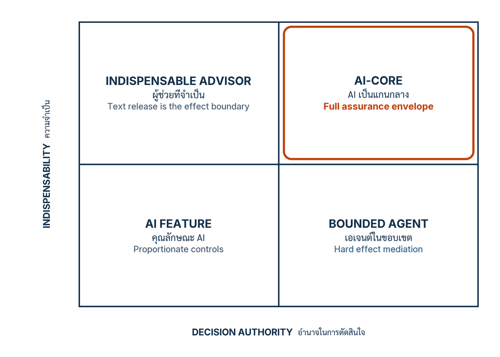
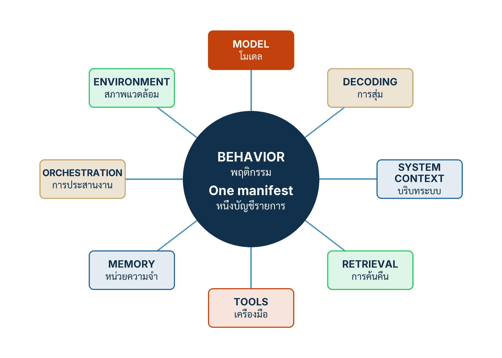

ในบทความนี้
- AI-core ไม่ใช่ "ซอฟต์แวร์ที่เรียกโมเดล"
- 2×2 — อำนาจตัดสินใจ × ความขาดไม่ได้ และสี่ช่องที่ต้องการคนละอย่าง
- การ์ดจำแนกสิบช่อง และตัวอย่าง CX-REFUND-01 ที่กรอกแล้ว
- ซอฟต์แวร์ 1.0, 2.0 และ 3.0 อยู่ใน Call Path เดียวกัน
- บริบทในฐานะโปรแกรม — พฤติกรรมมาจากทั้งชุดประกอบ
- บัญชีรายการบริบทขณะทำงาน — หกโดเมนในรุ่นเดียว
- สี่ชั้น และเวิร์กช็อป Boundary walk
- ตัวชี้วัดสำคัญ และรูปแบบความล้มเหลว
- ก้าวต่อไป — จากการจำแนก สู่สัญญาที่เขียนเป็นข้อ ๆ ได้
In this post
- An AI-core system is not "software that calls a model"
- The 2×2 — decision authority × indispensability, and four cells that need different things
- The ten-field classification card, and a completed CX-REFUND-01
- Software 1.0, 2.0 and 3.0 live in the same call path
- Context as program — behaviour comes from the whole assembly
- The runtime-context manifest — six domains in one release
- Four layers, and the boundary-walk workshop
- Metrics that matter, and failure patterns
- The road ahead — from a classification to a contract you can write as clauses
🤔 ผลิตภัณฑ์ตัวเดียวกันมี AI-assisted coding, coding agent, AI-enabled software และ AI-core อยู่ในนั้นได้พร้อมกันทั้งสี่อย่าง — แล้วส่วนไหนกันแน่ที่ต้องการ assurance envelope เต็มรูปแบบ?
ห้าตอนที่ผ่านมาของซีรีส์นี้ว่าด้วยการออกแบบองค์กรใหม่ และปิดท้ายด้วย Federated by Design — ใครกำหนดมาตรฐาน สร้าง อนุมัติ และดำเนินงาน ซึ่งจบลงที่การแบ่งบทบาทว่าใครเป็นคนวางรางกลาง ใครสร้างบนราง ใครอนุมัติ และใครรับผิดชอบผลลัพธ์ในสายคุณค่า ตอนนี้เราข้ามเข้าสู่ส่วนที่สามของซีรีส์ — Engineer · วิศวกรรมแกนกลาง — และคำถามแรกของฝั่งวิศวกรรมไม่ใช่ "จะสร้างอย่างไร" แต่คือ "สิ่งที่กำลังจะสร้างนี้ เป็นอะไร ในเชิงระบบ" เพราะคำตอบของคำถามนั้นเป็นตัวกำหนดว่าต้องลงทุนกับการควบคุมมากแค่ไหน
คำตอบของบทนี้สั้นและคมกว่าที่หลายทีมคาดไว้: AI ที่เป็นแกนหลัก (AI-core) ไม่ใช่ป้ายที่ติดให้ทั้งองค์กรหรือทั้งผลิตภัณฑ์ แต่เป็นชนิดของ runtime ที่นิยามด้วยสองแกน คือ อำนาจตัดสินใจ (decision authority) ของโมเดล และความขาดไม่ได้ (indispensability) ของโมเดล ต่อชุดงานหนึ่งที่ประกาศไว้ล่วงหน้า — และคุณพิสูจน์แกนที่สองด้วยการถอดโมเดลออกจริง ๆ แล้ววัด ไม่ใช่ด้วยการเชื่อ
1. AI-core ไม่ใช่ "ซอฟต์แวร์ที่เรียกโมเดล"
บทที่ 7 ของคู่มือที่ซีรีส์นี้เดินตาม[1] เปิดด้วยประโยคเดียวที่ทำหน้าที่เป็นทั้งนิยามและคำเตือน — "AI-core is a task scoped runtime class defined by decision authority and model indispensability then governed according to consequence." อ่านช้า ๆ จะเห็นว่าประโยคนี้ปฏิเสธวิธีที่คนส่วนใหญ่ใช้คำนี้อยู่ทุกวันถึงสามชั้น: มันเป็น runtime class ไม่ใช่ชื่อสถาปัตยกรรม มันมี ขอบเขตชุดงาน (task scope) กำกับ ไม่ใช่ป้ายระดับองค์กร และการกำกับดูแลของมันถูกกำหนดโดย ระดับผลกระทบ (consequence) ไม่ใช่โดยความก้าวหน้าทางเทคนิค
ฉบับภาษาอังกฤษของบทนี้ขยายความไว้ตรงกว่านั้นอีก และผมขอยกมาเต็มประโยคเพราะทุกคำมีหน้าที่:
An AI-core system is not simply software that calls a model. It is a scoped runtime class in which model output controls an important share of released content, action, or program branch, and a predeclared removal test shows that the model is indispensable to the specified task set. Classification belongs to a task, manifest, golden set, and threshold, not to a vendor, model family, or whole organization.[1]
ประโยคนี้มีเงื่อนไขสองข้อที่ต้องเป็นจริง พร้อมกัน ระบบจึงจะเรียกว่า AI-core ได้ ข้อแรกคือ ผลจากโมเดลควบคุมส่วนสำคัญของเนื้อหาที่ปล่อยออกไป การกระทำ หรือทางเดินของโปรแกรม — สังเกตว่าไม่ได้เขียนว่า "โมเดลถูกเรียกใช้" แต่เขียนว่า "ควบคุม" คือผลของโมเดลเป็นตัวกำหนดว่าอะไรจะออกไปถึงคนจริง หรือระบบจะเดินไปทางไหน ข้อที่สองคือ การทดสอบด้วยการถอดโมเดลออกซึ่งประกาศเกณฑ์ไว้ล่วงหน้า (predeclared removal test) แสดงว่าโมเดลขาดไม่ได้ต่อชุดงานที่ระบุ — คำว่า "ประกาศไว้ล่วงหน้า" คือหัวใจ เพราะถ้าคุณรันการทดสอบก่อนแล้วค่อยตั้งเกณฑ์ทีหลัง คุณไม่ได้ทดสอบอะไรเลย คุณแค่บรรยายผลที่ได้
ผมเจอทีมที่ผ่านเงื่อนไขข้อแรกแต่ไม่เคยแตะเงื่อนไขข้อที่สองอยู่บ่อยมาก ระบบสรุปเอกสารที่ปล่อยข้อความออกไปถึงลูกค้าโดยตรงผ่านข้อแรกเต็ม ๆ แต่พอถามว่า "ถ้าถอดโมเดลออกวันนี้ แล้วให้ Fallback ที่ประกาศไว้ทำงานแทน งานที่ประกาศไว้จะยังสำเร็จตามนิยาม Task Success หรือไม่ และคุณเคยวัดหรือยัง" คำตอบคือความเงียบ ระบบแบบนั้นอาจยังไม่ใช่ AI-core — มันอาจเป็นแค่ AI feature ที่ไม่มีใครเคยกดปุ่มปิดดู และความแตกต่างนี้แพงมาก เพราะมันเปลี่ยนงบประมาณด้านการควบคุมทั้งก้อน
สี่แนวคิดที่ถูกยุบรวมกันจนหมดความหมาย
ย่อหน้าถัดมาของบทนี้ทำงานสำคัญที่สุดในหน้ากระดาษ คือแยกสี่คำที่คนไทยในวงการมักใช้ปนกันจนคุยกันไม่รู้เรื่อง — "This separates four ideas. AI-assisted coding changes how software is developed. A coding agent performs delegated repository work. AI-enabled software contains a model-backed feature. An AI-core system makes model-generated behavior load-bearing at runtime."[1]
| Idea | เกิดขึ้นที่ไหน | สิ่งที่โมเดลเปลี่ยน | ต้องการ assurance envelope เต็มรูปแบบไหม |
|---|---|---|---|
| AI-assisted coding | ในขั้นตอนพัฒนา ก่อนถึง Production | วิธีที่ซอฟต์แวร์ถูกพัฒนาขึ้น | ไม่ — ตัวควบคุมอยู่ที่ Code Review และ CI ตามเดิม |
| Coding agent | ใน Repository ตามที่ได้รับมอบหมาย | งานใน Repo ที่ถูกมอบหมายให้ทำแทน | ไม่ใช่ envelope ของ Production แต่ต้องมีขอบเขตสิทธิ์ของตัวเอง |
| AI-enabled software | ใน Production เป็นฟีเจอร์หนึ่ง | มีคุณลักษณะหนึ่งที่มีโมเดลหนุนอยู่ | ไม่ — ใช้ตัวควบคุมตามสัดส่วนของผลกระทบ |
| AI-core | ใน Production ขณะทำงานจริง | พฤติกรรมที่โมเดลสร้างขึ้นกลายเป็นโครงสร้างรับน้ำหนัก | ใช่ — และนี่คือช่องเดียวในสี่ช่องที่ต้องการ |
ประโยคปิดของย่อหน้านั้นคือสิ่งที่ทำให้ตารางข้างบนไม่ใช่แค่การจัดหมวดหมู่ทางวิชาการ — "One product can contain an optional summarizer, an indispensable policy advisor, and an AI-core routing function."[1] ผลิตภัณฑ์ตัวเดียวมีได้ทั้งสามอย่างในเวลาเดียวกัน ดังนั้นคำถามที่ถูกจึงไม่ใช่ "ระบบของเราเป็น AI-core หรือเปล่า" แต่คือ "ความสามารถไหน ของระบบเราที่เป็น AI-core และอีกอันไม่ใช่ เพราะอะไร"
ผลที่ตามมาในทางปฏิบัติมีสองข้อ ข้อแรก ทะเบียนระบบ AI ขององค์กรที่มีคอลัมน์ "ประเภท" แล้วกรอกตามชื่อผู้ขาย ใช้ไม่ได้ ต้องกรอกตามชุดงานและ Manifest ข้อที่สอง การจำแนกมีวันหมดอายุโดยธรรมชาติ — เพราะถ้า Task, Authority, Fallback, Tool, Threshold หรือ Manifest เปลี่ยน การจำแนกเดิมก็ไม่ผูกพันอะไรอีกต่อไป และนั่นคือเหตุผลที่การ์ดในหัวข้อ 3 มีช่องสุดท้ายชื่อ "Trigger ที่ต้องจัดประเภทใหม่"
ควรบอกไว้ตั้งแต่ต้นด้วยว่าโครงคิดทั้งบทนี้ — ทั้งการจำแนกสองแกน แนวคิดบริบทในฐานะโปรแกรม และ Manifest — มาจากงานวิชาการฉบับหนึ่งของผู้เขียนคู่มือ ซึ่งยังไม่ได้ตีพิมพ์และไม่มี URL สาธารณะ[2] มันจึงเป็นการสังเคราะห์ของผู้เขียนคนเดียว ไม่ใช่มาตรฐานอุตสาหกรรม ไม่ใช่ระบบรับรอง และไม่ใช่ฉันทามติของวงการ ผมคิดว่ามันเป็นกรอบที่ใช้งานได้ดีมาก แต่ถ้าคุณเอาไปใช้ในเอกสารกำกับดูแล ต้องอ้างมันแบบที่มันเป็น
2. 2×2 — อำนาจตัดสินใจ × ความขาดไม่ได้ และสี่ช่องที่ต้องการคนละอย่าง
เมื่อรู้แล้วว่าเงื่อนไขมีสองข้อ วิธีมองที่ตรงที่สุดคือวางมันเป็นสองแกนแล้วดูว่าเกิดกี่กรณี แกนนอนคือ อำนาจตัดสินใจ — ผลจากโมเดลกำหนดสิ่งที่ปล่อยออกไปมากแค่ไหน ตั้งแต่ "เสนอให้คนอ่านแล้วคนตัดสิน" ไปจนถึง "ผลของโมเดลคือสิ่งที่ออกไปถึงลูกค้าโดยไม่มีใครอ่านทีละบรรทัด" แกนตั้งคือ ความขาดไม่ได้ — ถ้าถอดโมเดลออกแล้วให้ Fallback ที่ประกาศไว้ทำงานแทน ชุดงานที่ประกาศไว้ยังสำเร็จตามเกณฑ์หรือไม่
{kind=link}

สองแกนนี้ตั้งฉากกันจริง ๆ และนั่นคือประโยชน์หลักของรูปนี้ ทีมส่วนใหญ่เผลอคิดว่าสองอย่างนี้เป็นเรื่องเดียวกัน — "ถ้าโมเดลสำคัญมาก มันก็ต้องมีอำนาจมาก" — ซึ่งไม่จริงเลย ที่ปรึกษานโยบายภายในที่ทีมกฎหมายพึ่งพาทุกวันจนขาดไม่ได้ อาจไม่มีอำนาจกระทำใด ๆ นอกจากปล่อยข้อความ ส่วนเอเจนต์ที่กดปุ่มในระบบภายนอกได้เองอาจถูกถอดออกได้ทันทีโดยไม่มีใครสะดุด เพราะทีมยังทำงานเดิมด้วยมือได้อยู่
| Cell | ความขาดไม่ได้ | อำนาจตัดสินใจ | สิ่งที่ต้องมี |
|---|---|---|---|
| Indispensable advisor ผู้ช่วยที่ขาดไม่ได้ |
สูง | ต่ำ | ขอบเขตของผลอยู่ที่การปล่อยข้อความ — "Text release is the effect boundary" |
| AI-core AI ที่เป็นแกนหลัก |
สูง | สูง | กรอบการรับประกันรอบระบบเต็มรูปแบบ — "Full assurance envelope" |
| AI feature คุณลักษณะ AI |
ต่ำ | ต่ำ | ตัวควบคุมตามสัดส่วน — "Proportionate controls" |
| Bounded agent เอเจนต์ในขอบเขต |
ต่ำ | สูง | การควบคุมก่อนเกิดผลแบบแข็ง — "Hard effect mediation" |
คอลัมน์ขวาสุดคือเหตุผลทั้งหมดที่ต้องแยกสองแกน เพราะสี่ช่องนี้ต้องการงานคนละชนิด ไม่ใช่งานชนิดเดียวกันในปริมาณต่างกัน
- ช่อง Indispensable advisor — เมื่อขอบเขตของผลคือการปล่อยข้อความ งานควบคุมทั้งหมดจึงกระจุกอยู่ที่จุดปล่อย: อ้างอิงที่มาของข้อมูลและผลลัพธ์ (provenance) ได้ทุกข้อความหรือไม่ ปฏิเสธได้ไหมเมื่อหลักฐานอ่อน และมีเส้นทางส่งต่อให้คนเมื่อคำถามเกินขอบเขต การใส่ Execution Guard หนัก ๆ ในช่องนี้เป็นการลงทุนผิดที่ เพราะไม่มี Effect ให้กั้น
- ช่อง Bounded agent — ตรงกันข้ามเลย ระบบนี้ถอดออกได้ ผลกระทบต่อความต่อเนื่องทางธุรกิจต่ำ แต่มันกดปุ่มได้ งานทั้งหมดจึงอยู่ที่การควบคุมก่อนเกิดผล: สิทธิ์ผูกกับ Subject, Purpose, Amount, Duration และ Transaction และการกระทำทุกครั้งผ่านตัวกลางที่ตรวจได้
- ช่อง AI feature — ตัวควบคุมตามสัดส่วน ไม่ใช่ตัวควบคุมแบบมักง่าย ประโยคนี้ถูกอ่านผิดบ่อยเป็น "ไม่ต้องทำอะไร" ทั้งที่มันแปลว่า "ทำเท่าที่ผลกระทบเรียกร้อง แล้วบันทึกไว้ว่าทำไมถึงเท่านั้น"
- ช่อง AI-core — ต้องการทุกอย่างข้างบนพร้อมกัน บวกกับสิ่งที่อีกสามช่องไม่ต้องมี คือการกำหนดรุ่นของพื้นผิวพฤติกรรมทั้งหมด และร่องรอยที่สร้างเหตุการณ์ย้อนกลับได้ (reconstructable trace) ในทุกขั้นที่ระบบเดินผ่าน
สิ่งที่ผมอยากเน้นจากประสบการณ์ตรวจงานจริงคือ ช่องเหล่านี้เคลื่อนที่ได้ และมักเคลื่อนโดยไม่มีใครประกาศ ระบบที่เริ่มต้นในช่อง AI feature เมื่อปีที่แล้ว วันนี้อาจอยู่ในช่อง AI-core แล้ว เพราะมีการต่อ Tool เพิ่มหนึ่งตัว หรือเพราะทีมมนุษย์ที่เคยตรวจทีละรายการถูกลดขนาดลงจนตรวจไม่ทันแล้วเปลี่ยนเป็นสุ่มตรวจ ไม่มีใครเซ็นอนุมัติการย้ายช่องนั้น มันเกิดจากการที่ทั้งสองแกนขยับทีละนิดจนข้ามเส้นไปพร้อมกัน นี่คือรูปแบบที่ตอน #4 เรียกว่า authority debt (หนี้อำนาจ) และมันปรากฏตัวชัดที่สุดบนแผนภาพนี้
3. การ์ดจำแนกสิบช่อง และตัวอย่าง CX-REFUND-01 ที่กรอกแล้ว
2×2 เป็นเครื่องมือคิด ส่วนสิ่งที่เอาเข้าห้องประชุมได้จริงคือการ์ดหนึ่งใบ ภาคผนวก ข ของคู่มือให้ AI-core use-case classification card มาเป็นแบบฟอร์มพร้อมใช้[1] โดยระบุกำกับไว้ครบสามบรรทัดตามธรรมเนียมของภาคผนวกนี้ — วัตถุประสงค์ จัดประเภทความสามารถที่ปล่อยจริงหนึ่งอย่างด้วยสองแกนอิสระ และประเมินระดับผลกระทบ แยกต่างหาก · ใช้เมื่อ คัดเลือก Use Case และเมื่อใดก็ตามที่ขอบเขต อำนาจ Fallback Tool Threshold หรือ Manifest เปลี่ยน · เจ้าของหลัก Business หรือ Product Owner โดยมี Release Owner เป็นผู้ตรวจหลักฐาน
คำว่า "แยกต่างหาก" ในบรรทัดวัตถุประสงค์เป็นรายละเอียดที่ผมอยากให้สังเกต ระดับผลกระทบ ไม่ใช่ แกนที่สามของ 2×2 มันเป็นข้อมูลคนละชุดที่ประเมินแยกแล้ววางเทียบกัน เพราะการรวมมันเข้าไปในการจำแนกจะทำให้เกิดสิ่งที่อันตรายที่สุดในงานกำกับดูแล คือคะแนนเดียวที่เอาความรุนแรงไปหักล้างกับอำนาจ จนงานสองแบบที่ต้องการการควบคุมคนละชนิดได้คะแนนเท่ากัน
การ์ดพร้อมใช้ — สิบช่อง ตามลำดับ
| # | Field | รายการที่ต้องกรอก |
|---|---|---|
| 1 | ID, task set, exclusions, manifest | รหัส ชุดงาน กรณีที่ไม่รวม และ Manifest ที่ผูกอยู่ |
| 2 | Model-controlled released behavior | ข้อความ Tool ค่า Argument หรือ Runtime Branch — ระบุให้ชัดว่าอะไรที่โมเดลกำหนดแล้วถูกปล่อยจริง |
| 3 | Authority test and trace evidence | Advisory หรืออำนาจสูง พร้อม Trace ที่ใช้พิสูจน์คำตอบนั้น |
| 4 | Declared non-model fallback | Fallback ที่ไม่ใช้โมเดล ซึ่งประกาศไว้ล่วงหน้า |
| 5 | Golden set, task-success rule, predeclared indispensability threshold | Golden Set นิยาม Task Success และเกณฑ์ความขาดไม่ได้ที่ประกาศก่อนรัน |
| 6 | Removal ablation: model versus fallback on the same set | ผลการถอดโมเดลออก เทียบกับ Fallback บนชุดข้อมูลเดียวกัน |
| 7 | Classification | สูง/สูง AI-core · สูง/ต่ำ Bounded Agent · แนะนำ/สูง Indispensable Advisor · แนะนำ/ต่ำ AI Feature |
| 8 | Separate consequence profile | ความรุนแรง การเปิดรับ การตรวจพบ การกู้คืน และสิทธิหรือสินทรัพย์ที่ได้รับผล |
| 9 | Minimum controls, owner, decision, date | ตัวควบคุมขั้นต่ำ เจ้าของ คำตัดสิน และวันที่ |
| 10 | Reclassification triggers | Trigger ที่ทำให้ต้องจัดประเภทใหม่ |
สามช่องที่ทีมมักกรอกไม่ได้คือช่อง 4, 5 และ 6 ซึ่งเป็นสามช่องเดียวกันที่ทำให้แกน "ความขาดไม่ได้" มีความหมาย ถ้าคุณไม่มี Fallback ที่ประกาศไว้ คุณก็ไม่มีอะไรให้เปรียบเทียบ ถ้าคุณไม่มี Golden Set และนิยาม Task Success คุณก็วัดผลการเปรียบเทียบนั้นไม่ได้ และถ้าคุณไม่ได้ประกาศเกณฑ์ก่อนรัน ผลที่ได้ก็เป็นแค่ตัวเลขที่ตีความไปทางไหนก็ได้ ผมเคยเห็นการ์ดที่กรอกช่อง 7 ว่า "AI-core" ไว้เรียบร้อยโดยที่สามช่องก่อนหน้าว่างเปล่า นั่นไม่ใช่การจำแนก มันคือความรู้สึก
ตัวอย่างที่กรอกแล้ว — CX-REFUND-01
ตัวอย่างทั้งหมดในภาคผนวก ข ใช้เคสเดียวกันคือ CX-REFUND-01 ผู้ช่วยของ Luma Commerce Thailand (กรณีสมมติจากหนังสือ) ซึ่งตอบคำถามเรื่องการคืนเงินได้สองภาษา และอาจเสนอ issue_refund โดยมี Guard ภายนอกเป็นผู้ดำเนินการคืนเงินที่เข้าเกณฑ์ได้หนึ่งครั้ง วงเงินไม่เกิน 2,000 บาท หลังการยืนยัน ส่วนการกระทำทางการเงินอื่นทั้งหมดต้องไปถึงคน คู่มือกำกับไว้เองด้วยประโยคเดียวว่า "Values are illustrative, not universal thresholds."[1]
| Field | ตัวอย่างที่กรอกแล้ว (ค่าสมมติ) |
|---|---|
| Scope | Order แบบ Direct Retail ในไทยที่ส่งแล้ว ครอบคลุมคำอธิบายทั่วไปและ Refund หนึ่งครั้ง ไม่รวม Fraud Flag, Subscription, Marketplace, ข้อร้องเรียนกฎหมาย เงินสกุลอื่น และยอดเกิน 2,000 บาท |
| Authority | โมเดลกำหนดคำอธิบายที่ถูกปล่อย Passage ที่อ้างอิง คำแนะนำเรื่องการคืนเงิน และ Argument ที่เสนอ โดยข้อเสนอที่เข้าเกณฑ์เดินถึง Guard ได้โดยไม่มีคนตรวจทีละบรรทัด |
| Fallback | ลิงก์นโยบายแบบตายตัว บวกคิว Customer Care โดยไม่มี Refund อัตโนมัติ |
| Ablation | CXGS-2026-09-v3 จำนวน 240 กรณี กำหนดว่า Fallback ต้องได้ 70% จึงเพียงพอ ผลสมมติคือ Candidate 94.6% และ Fallback 41.3% |
| Class | อำนาจสูงและขาดไม่ได้ จึงเป็น AI-core สำหรับชุดงานและ Manifest นี้ |
| Consequence | ข้อความสาธารณะอาจทำให้เข้าใจผิด ส่วน Financial Write กู้คืนได้แต่มีต้นทุน |
| Decision | ใช้ Envelope เต็มรูปแบบ ควบคุมเส้นทาง Output และ Tool เก็บ Terminal Trace และส่งให้คนนอกกรณีจำกัด โดย VP Customer Operations เป็นเจ้าของการจัดประเภทใหม่ |
สังเกตอย่างหนึ่งที่ต้องอ่านให้ตรง: การ์ดเปล่ามี สิบช่อง แต่ตัวอย่างที่กรอกแล้วในหนังสือพิมพ์ออกมาเป็น เจ็ดแถว — Scope, Authority, Fallback, Ablation, Class, Consequence และ Decision[1] เจ็ดแถวนี้เป็นการยุบช่องที่เกี่ยวข้องกันเข้าด้วยกันเพื่อให้อ่านง่ายในหน้ากระดาษ ไม่ใช่การลดจำนวนช่องที่ต้องกรอก ถ้าคุณทำการ์ดของคุณเองแล้วเหลือเจ็ดแถวตั้งแต่ต้น คุณจะพบว่าไม่มีที่ว่างสำหรับ "Trigger ที่ต้องจัดประเภทใหม่" ซึ่งเป็นช่องที่มีอายุการใช้งานยาวที่สุดในการ์ดทั้งใบ
แถว Ablation คือแถวที่ผมอยากให้ทุกทีมลองทำจริงสักครั้งก่อนอ่านตอนต่อไป มันบังคับสี่อย่างพร้อมกัน หนึ่ง คุณต้องมีชุดข้อมูลที่แบ่ง Slice ไว้แล้ว สอง คุณต้องมี Fallback ที่รันได้จริง ไม่ใช่ที่เขียนไว้ในเอกสาร สาม คุณต้องประกาศเกณฑ์ก่อน และสี่ ทั้งสองฝั่งต้องรันบนชุดเดียวกัน — เงื่อนไข "บนชุดเดียวกัน" นี้คือจุดที่การทดสอบส่วนใหญ่พัง เพราะทีมมักเทียบผลของโมเดลบนข้อมูลจริงเดือนล่าสุด กับผลของ Fallback ที่ประเมินจากความทรงจำของทีมเมื่อสองปีก่อน
4. ซอฟต์แวร์ 1.0, 2.0 และ 3.0 อยู่ใน Call Path เดียวกัน
เมื่อจำแนกได้แล้วว่าอะไรคือแกนหลัก คำถามถัดไปคือแกนหลักนั้นถูกประกอบขึ้นจากอะไร คู่มือตอบด้วยประโยคที่ผมคิดว่าเป็นประโยคที่ปฏิบัติได้จริงที่สุดของทั้งบท — "Software 1.0, 2.0, and 3.0 remain in the same call path. Explicit code owns interfaces, permissions, control flow, transactions, and effect mediation. Learned components contribute statistical capability. Runtime context supplies goals, examples, retrieved knowledge, tools, and state."[1]
คำว่า ซอฟต์แวร์ 1.0, 2.0 และ 3.0 ถูกใช้กันแพร่หลายจนหลายคนลืมไปแล้วว่ามันมาจากไหน คู่มือเองก็ใช้คำนี้โดยไม่ระบุที่มา ผมจึงขอเติมให้ครบในฐานะส่วนเพิ่มของบทความนี้เอง ไม่ใช่ของหนังสือ: คำว่า Software 1.0 และ 2.0 มาจากบทความ Software 2.0 ของ Andrej Karpathy เมื่อ 11 พฤศจิกายน 2017[3] ซึ่งนิยาม 1.0 ว่าเป็น "explicit instructions to the computer written by a programmer" และ 2.0 ว่าเขียนด้วยภาษาที่มนุษย์อ่านไม่รู้เรื่อง "such as the weights of a neural network" ส่วนคำว่า Software 3.0 ไม่ได้อยู่ในบทความปี 2017 เลยแม้แต่ครั้งเดียว — มันมาจากคีย์โน้ต Software Is Changing (Again) ที่เขาบรรยายเมื่อ 17 มิถุนายน 2025 ซึ่ง Y Combinator สรุปไว้เองว่าเป็นยุคที่ "natural language becomes the new programming interface"[4]
ทั้งสองแหล่งเป็นบทความความเห็นและคลิปบรรยาย ไม่ใช่งานวิจัยที่มีการควบคุม ผมอ้างมันเพื่อความถูกต้องของที่มาของคำเท่านั้น ไม่ได้อ้างเป็นหลักฐานว่าข้อเสนอใดถูกหรือผิด
สิ่งที่คู่มือเพิ่มเข้ามาและมีค่ามากกว่าตัวคำศัพท์ คือการยืนยันว่าทั้งสามอย่างนี้ ไม่ได้แทนที่กัน แต่อยู่ใน Call Path เดียวกัน และแต่ละอย่างมีหน้าที่ที่ทับกันไม่ได้
| Layer | สิ่งที่เป็นเจ้าของ | สิ่งที่ไม่ควรถูกยกให้ชั้นอื่น |
|---|---|---|
| Software 1.0 โค้ดที่เขียนชัดเจน |
Interface, Permission, Control Flow, Transaction และการควบคุมก่อนเกิดผล | สิทธิ์และผลกระทบ — สองอย่างนี้ต้องอยู่ในโค้ดเสมอ ไม่ว่าโมเดลจะเก่งขึ้นแค่ไหน |
| Software 2.0 ส่วนที่เรียนรู้มา |
ความสามารถเชิงสถิติ — การอ่าน สรุป จัดหมวด และประเมินความคล้าย | การรับประกันเชิงโครงสร้าง เพราะผลของมันเป็นค่าประเมินเชิงความหมายเสมอ |
| Software 3.0 บริบทขณะทำงาน |
เป้าหมาย ตัวอย่าง ความรู้ที่ค้นคืนมา Tool ที่มองเห็น และ State | สถานะ "แก้ได้โดยไม่ต้องผ่าน Change Control" — เพราะการแก้บริบทคือการแก้โปรแกรม |
💡 มุมมองของผม: หลักปฏิบัติข้อที่ 2 ของบทนี้เขียนไว้สั้นที่สุดแต่กันความเสียหายได้มากที่สุด — "ให้โค้ดควบคุมสิทธิ์และผลกระทบ โมเดลเสนอ บริการ Authorize, Validate, Transact และ Release" ผมชอบที่มันเขียนเป็นลำดับกริยาสี่คำ เพราะมันตรวจได้ทันทีในการทบทวนสถาปัตยกรรม: ชี้ให้ผมดูหน่อยว่า Authorize อยู่บรรทัดไหน Validate อยู่บรรทัดไหน Transact อยู่ที่ไหน และ Release เกิดขึ้นตรงไหน ถ้าคำตอบของสี่คำนี้อยู่ใน Prompt ทั้งหมด แปลว่าคุณยังไม่มีระบบ คุณมีคำขอร้อง
การเปรียบเทียบกับ Operating System — ยื่นให้แล้วหักทิ้งในประโยคเดียวกัน
คีย์โน้ตปี 2025 ที่กล่าวถึงข้างต้นเสนอภาพ LLM เป็นเสมือนระบบปฏิบัติการ[4] ซึ่งเป็นภาพที่ช่วยให้เห็นโครงได้เร็ว คู่มือหยิบภาพนี้มาใช้ แล้ว หักมันทิ้งในประโยคถัดมาทันที — "The operating-system analogy helps, but context has no true memory protection, retrieval has no stable read contract without versioning, and a natural-language tool request is not an authorized system call."[1] ผมคิดว่าประโยคนี้ควรถูกพิมพ์แปะไว้ในห้องประชุมสถาปัตยกรรมของทุกทีม เพราะรอยหักสามจุดนี้คือที่มาของอุบัติเหตุจริงเกือบทั้งหมดที่ผมเคยเห็น
| OS concept | สิ่งที่คนคาดว่าจะได้ | สิ่งที่ได้จริงในระบบ AI-core |
|---|---|---|
| Memory protection | Process หนึ่งเขียนทับหน่วยความจำของอีก Process ไม่ได้ | บริบทไม่มีการป้องกันหน่วยความจำจริง ข้อความที่ไม่น่าเชื่อถือกับคำสั่งระบบอยู่ในสายอักขระเดียวกัน การแยกจึงเป็นเรื่องของวินัยในการประกอบบริบท ไม่ใช่ของฮาร์ดแวร์ |
| Read contract | อ่านที่อยู่เดิมได้ค่าเดิม จนกว่าจะมีใครเขียนทับ | Retrieval ไม่มี Read Contract ที่คงที่หากไม่กำหนดรุ่น คำถามเดิมวันนี้กับพรุ่งนี้อาจได้ Passage คนละชุด เพราะ Corpus, Ranker หรือ Top-k ขยับ |
| System call | คำขอผ่าน Kernel ที่ตรวจสิทธิ์ทุกครั้ง | คำขอใช้ Tool ที่เป็นภาษาธรรมชาติ ไม่ใช่ System Call ที่ได้รับอนุญาต มันเป็นเพียงข้อเสนอ จนกว่าจะมีโค้ดที่ตรวจแล้วอนุมัติ |
รอยหักข้อที่สามคือ การแยกข้อเสนอออกจากผลจริง (proposal–effect separation) ซึ่งเป็นแนวคิดที่จะกลับมาเป็นตัวเอกในตอน #13 และมันไม่ใช่ของใหม่เลยในทางวิศวกรรมความปลอดภัย มันคือหลัก complete mediation ที่ Saltzer และ Schroeder เขียนไว้ตั้งแต่ปี 1975 ว่า "Every access to every object must be checked for authority."[5] คู่กับหลัก least privilege ที่ว่าทุกโปรแกรมและทุกผู้ใช้ควรทำงานด้วยชุดสิทธิ์ที่น้อยที่สุดเท่าที่งานต้องการ และ fail-safe defaults ที่ให้ตัดสินใจจากการอนุญาตมากกว่าการกันออก
ผมชอบยกงานปี 1975 ชิ้นนี้ในห้องประชุม AI เพราะมันเปลี่ยนน้ำเสียงของบทสนทนาได้ทันที เรื่องที่เรากำลังคุยกันไม่ใช่ข้อกังวลใหม่ของยุค LLM แต่เป็นหลักการที่วงการคอมพิวเตอร์ตกลงกันมาตั้งแต่ปี 1975 — สิ่งที่ LLM เปลี่ยนคือมันทำให้ ผู้ขอ พูดภาษาคนได้อย่างน่าเชื่อถือมาก จนคนรู้สึกว่าไม่ต้องตรวจ ซึ่งเป็นความรู้สึกที่ต้องต้านให้ได้ในทุกจุดที่มีการกระทำจริงเกิดขึ้น (เอกสารต้นฉบับของงานชิ้นนี้อยู่หลังกำแพงชำระเงินของ IEEE ผมจึงอ้าง DOI ไว้ ไม่ได้อ้างสำเนา)
5. บริบทในฐานะโปรแกรม — พฤติกรรมมาจากทั้งชุดประกอบ
ถ้าหัวข้อที่แล้วบอกว่าใครเป็นเจ้าของอะไร หัวข้อนี้บอกว่าอะไรบ้างที่รวมกันแล้วกลายเป็น "พฤติกรรม" ของระบบ และคำตอบยาวกว่าที่เอกสารสถาปัตยกรรมส่วนใหญ่ยอมรับ — "Behavior therefore depends on the assembly: model version, decoding, context, retrieval, tool semantics, orchestration, memory, and environment."[1]
{kind=link}

แนวคิด บริบทในฐานะโปรแกรม (context as program) สรุปได้ด้วยประโยคเดียวที่เป็นบรรทัดฐานของทั้งบท: "A behavior-relevant change to any component is a program change and should trigger a new manifest and evidence review."[1] — การเปลี่ยนแปลงใดก็ตามที่มีผลต่อพฤติกรรม ในองค์ประกอบใดก็ตาม คือ การเปลี่ยนโปรแกรม และต้องสร้าง Manifest ใหม่พร้อมทบทวนหลักฐาน
ประโยคนี้ฟังดูเข้มงวดเกินจำเป็น จนกระทั่งคุณลองไล่ดูทีละองค์ประกอบว่าในองค์กรของคุณ ใครแก้มันได้บ้าง และแก้ผ่านกระบวนการอะไร
| Component | ตัวอย่างการเปลี่ยนที่ดู "ไม่ใช่การแก้โค้ด" | ผลต่อพฤติกรรม |
|---|---|---|
| Model โมเดล | ผู้ให้บริการอัปเดตรุ่นย่อยอัตโนมัติเพราะเราไม่ได้ Pin รหัสรุ่นแบบระบุวันที่ | เปลี่ยนทุกอย่างพร้อมกัน โดยไม่มี Ticket ใดในองค์กรบันทึกไว้ |
| Decoding การสุ่ม | ปรับ Temperature หรือเพดาน Token เพื่อลดค่าใช้จ่าย | เปลี่ยนความยาว ความครบ และอัตราการตอบไม่ครบโครงสร้าง |
| System context บริบทระบบ | แก้ Prompt หนึ่งบรรทัดในหน้าตั้งค่า | เปลี่ยนขอบเขตของงานทั้งชุด บ่อยครั้งโดยไม่ตั้งใจ |
| Retrieval การค้นคืน | เพิ่มเอกสารเข้า Corpus หรือขยับค่า Top-k ขึ้นหนึ่งระดับ | เปลี่ยนหลักฐานที่โมเดลเห็น จึงเปลี่ยนคำตอบโดยที่ Prompt เหมือนเดิมทุกตัวอักษร |
| Tools เครื่องมือ | อัปเดต Schema ของ Tool ให้มีฟิลด์ใหม่ | เปลี่ยนสิ่งที่โมเดลเสนอได้ และเปลี่ยนพื้นที่ของผลกระทบ |
| Memory หน่วยความจำ | ขยายอายุการเก็บ Session เพื่อให้บทสนทนา "ต่อเนื่องขึ้น" | เปลี่ยนสิ่งที่ระบบจำข้ามครั้งได้ และเปิดความเสี่ยงเรื่องขอบเขตข้อมูล |
| Orchestration การประสานงาน | สลับลำดับขั้น หรือเพิ่มรอบการเรียกซ้ำหนึ่งรอบ | เปลี่ยนเส้นทางที่ระบบเดินผ่าน จึงเปลี่ยน Trace ที่ต้องเก็บ |
| Environment สภาพแวดล้อม | ย้าย Region หรือเปลี่ยนผู้ให้บริการโครงสร้างพื้นฐาน | เปลี่ยน Latency ข้อจำกัดด้านข้อมูล และบางครั้งเปลี่ยนพฤติกรรมของโมเดลเอง |
แถวที่ผมอยากให้หยุดอ่านนานที่สุดคือแถว System context และแถว Retrieval เพราะทั้งสองแถวนี้คือจุดที่วินัยด้าน Change Control ขององค์กรพังเงียบที่สุด องค์กรที่มีกระบวนการอนุมัติการแก้โค้ดสามชั้น มักปล่อยให้ Prompt ถูกแก้ผ่านหน้าจอตั้งค่าโดยคนที่ไม่ต้องขออนุมัติใคร และปล่อยให้ Corpus ถูกเติมเอกสารใหม่ทุกสัปดาห์ในฐานะ "งานเนื้อหา" ไม่ใช่ "งานปล่อยรุ่น" ทั้งสองอย่างนี้เปลี่ยนพฤติกรรมของระบบจริงยิ่งกว่าการแก้โค้ดหลายกรณี
ผมเคยเจอเคสที่ชัดมากเคสหนึ่ง: คำตอบของระบบเปลี่ยนไปอย่างมีนัยระหว่างสัปดาห์ ทีมวิศวกรรมยืนยันว่าไม่มีการ Deploy ใด ๆ ซึ่งเป็นความจริง — สิ่งที่เปลี่ยนคือทีมเนื้อหาเพิ่มเอกสารนโยบายฉบับปรับปรุงเข้า Corpus โดยไม่ได้ลบฉบับเก่าออก ระบบจึงค้นเจอทั้งสองฉบับและเลือกฉบับที่คะแนนความคล้ายสูงกว่า ซึ่งบังเอิญเป็นฉบับเก่า ในกรอบคิด "บริบทในฐานะโปรแกรม" เหตุการณ์นี้คือการ Deploy โค้ดที่เปลี่ยนพฤติกรรม โดยไม่มี Manifest ไม่มีการทบทวนหลักฐาน และไม่มีทางย้อนกลับที่ระบุได้
6. บัญชีรายการบริบทขณะทำงาน — หกโดเมนในรุ่นเดียว
คำตอบของคู่มือต่อปัญหาข้างบนคือ บัญชีรายการบริบทขณะทำงาน (runtime-context manifest) ซึ่งเป็นเครื่องมือชิ้นที่สี่ในภาคผนวก ข[1] — วัตถุประสงค์ ตรึงทั้งรุ่นที่กำหนดพฤติกรรม ไม่ใช่เฉพาะโมเดล โดย Manifest ระบุว่า ควรจะ ประกอบบริบทอย่างไร ส่วน Trace บันทึกว่าคำขอหนึ่ง ๆ ได้รับ อะไรจริง · ใช้เมื่อ Model, Decoding, Prompt, Corpus, Retrieval, Tool, Control, Threshold, Evaluator หรือ Orchestration เปลี่ยน · เจ้าของหลัก Release Owner ลงนาม Manifest รวม และเจ้าของแต่ละองค์ประกอบรับรองรายการของตน
ความแตกต่างระหว่าง Manifest กับ Trace ในบรรทัดแรกนั้นสำคัญกว่าที่เห็น Manifest คือ คำประกาศ ส่วน Trace คือ บันทึกเหตุการณ์ องค์กรที่มีแต่ Log แต่ไม่มี Manifest จะตอบได้ว่าเกิดอะไรขึ้น แต่ตอบไม่ได้ว่ามันควรเกิดอะไรขึ้น จึงพิสูจน์ไม่ได้ว่าระบบเบี่ยงจากที่ประกาศไว้หรือไม่ ส่วนองค์กรที่มีแต่ Manifest แต่ไม่มี Trace จะประกาศได้สวยงามโดยไม่มีอะไรยืนยันว่าของจริงเป็นไปตามนั้น
Manifest พร้อมใช้ — หกโดเมน
| Domain | ช่องข้อมูลบังคับ |
|---|---|
| Identity and scope Identity/Scope |
Use-case และ Manifest ID, สถานะ, เจ้าของ, Parent, Ticket, ชุดงาน, กรณีที่ไม่รวม, ภาษา, Channel และชั้นของผลกระทบ |
| Core and context Core/Context |
รหัสโมเดลที่ระบุวันที่แน่นอน, Region, Decoding, Assembly Commit, Hash ของ Instruction และ Template, ตัวอย่าง, ลำดับ และ Token Budget |
| Knowledge and state Knowledge/State |
Corpus Hash, Source Allow-list, Ranker หรือ Embedding, Top-k, ความสดของข้อมูล, ที่มาของข้อมูลและผลลัพธ์, Session Schema, Memory และ Retention |
| Tools and controls Tool/Control |
Hash ของ Registry และ Schema, Authentication, ขอบเขตค่า, Idempotency, Sandbox, รุ่นของรางควบคุมห้าชั้น (five rails), Threshold และ Route |
| Evaluation and trace Evaluation/Trace |
ชุดทดสอบ Golden, Hidden, Adaptive และ Fault; รุ่นของ Grader; Trace Schema, การจัดเก็บ, การกลบข้อมูล, สิทธิ์เข้าถึง และ Retention |
| Operations and integrity Operations/Integrity |
แผนการ Rollout, เพดานการเปิดรับ, เงื่อนไขหยุด, Rollback ID, เส้นทางเมื่อระบบล่ม, การอนุมัติ, Manifest Hash, Dependency Lock และตำแหน่งของ Artifact |
ตัวอย่างที่กรอกแล้ว — และเหตุผลที่มันมีห้าแถว ไม่ใช่หก
ตัวอย่าง CX-REFUND-01 ในหนังสือรวมโดเมน Evaluation and trace กับ Operations and integrity ไว้ในแถวเดียวชื่อ "Evaluation and operations" ตัวอย่างจึงพิมพ์ออกมาเป็นห้าแถว ทั้งที่ Manifest พร้อมใช้มีหกโดเมน[1] ผมเลือกที่จะไม่ "แก้" ให้เป็นหกแถว เพราะการยุบนี้เป็นข้อเท็จจริงของหน้ากระดาษที่คุณจะเห็นถ้าเปิดหนังสือ และเพราะมันสะท้อนสิ่งที่เกิดขึ้นจริงในทีม — เจ้าของชุดทดสอบกับเจ้าของแผน Rollout มักเป็นคนเดียวกัน จนคนลืมว่าเป็นสองโดเมนที่ต้องรับรองแยกกัน
| Domain | ตัวอย่างที่กรอกแล้ว (ค่าสมมติทั้งหมด) |
|---|---|
| Identity/Scope | CX-REFUND-01.2026-09-rc4, Parent 2026-08-prod2, Change CHG-4821; Web/Mobile ไทย ภาษาไทย/อังกฤษ และขอบเขตกับกรณีที่ไม่รวมตามการ์ดจำแนกในหัวข้อ 3 |
| Core/Context | รหัสสมมติที่ระบุวันที่ luma/cx-core-2026-08-17; Temperature 0, สูงสุด 900 Token, Schema Mode; Assembly Commit 9f31c7a, Template refund-chat-v12, ห้ามยกระดับ Untrusted Text เป็น Instruction |
| Knowledge/State | Corpus TH-CX-2026-09-01 พร้อม Immutable Hash, Policy Allow-list, Ranker rr-4.2, Top-k 6; Session Schema v5 และไม่มี Memory ข้ามลูกค้า |
| Tool/Control | paytools-v7 เฉพาะ issue_refund, 1–2,000 บาท, ต้องมี Confirmation และ Idempotency; cx-rails-v9, Output Schema v6 และ Threshold ตามสัญญา |
| Evaluation/Operations | CXGS-v3, CXRT-v5, Hidden CXH-2026Q3, Adaptive CXA-09, Fault CXF-v4; เปิดเป็นขั้น 5/25/50/100%; หยุดเมื่อมี Prohibited Effect, Severe Escape หรือ Terminal Trace หาย; พร้อมลายเซ็นเจ็ดฝ่ายและ Manifest Hash ที่แก้ไม่ได้ |
รายละเอียดเล็ก ๆ ที่ผมอยากชี้ให้เห็นคือรหัสชุดทดสอบ ในการ์ดจำแนกหัวข้อ 3 ชุดทดสอบเดียวกันนี้เขียนว่า CXGS-2026-09-v3 แต่ใน Manifest เขียนว่า CXGS-v3 คู่มือใช้สองรูปแบบในสองเครื่องมือ และผมเลือกคงไว้ทั้งสองแบบตามต้นฉบับ ไม่ปรับให้เหมือนกัน — เพราะจุดนี้เองคือบทเรียนย่อย ๆ ของบท: ถ้ารหัสของสิ่งเดียวกันเขียนไม่เหมือนกันในสองเอกสาร ระบบตรวจสอบอัตโนมัติจะจับคู่มันไม่ได้ และ "Manifest Resolution" ในตารางตัวชี้วัดหัวข้อ 8 ก็จะล้มเหลวด้วยเหตุผลที่ไม่มีใครคิดว่าเป็นเหตุผล
TH-CX-2026-09-01 ที่ผูก Hash ไว้แบบแก้ไม่ได้ · Channel ระบุว่าเป็น Web/Mobile ในไทย · ภาษาระบุว่าไทย/อังกฤษ ซึ่งแปลว่าชุดทดสอบต้องมีทั้งสองภาษาและต้องมี Slice แยก · และขอบเขตวงเงินระบุเป็นบาท (1–2,000 บาท) ไม่ใช่สกุลอื่น ส่วนเรื่อง เขตเวลา ตัวอย่างในหนังสือไม่ได้ระบุ Offset +07 ไว้ — การกำหนดให้ทุก Timestamp ใน Manifest และ Trace เขียนเป็นเวลาที่ระบุ Offset ชัดเจนเป็น ข้อเสนอของผมเอง ไม่ใช่ข้อกำหนดของคู่มือ แต่ผมเสนอเพราะเคยเห็นการสอบสวนเหตุการณ์ที่เสียเวลาไปครึ่งวันกับการเถียงว่า Log สองชุดที่เวลาต่างกันเจ็ดชั่วโมงเป็นเหตุการณ์เดียวกันหรือไม่
สำหรับองค์กรที่ต้องอธิบายเรื่องนี้กับผู้ตรวจสอบภายนอก มีจุดยึดที่เป็นสากลอยู่จุดหนึ่ง NIST AI 600-1 ซึ่งเป็น Generative AI Profile ของกรอบ AI RMF เผยแพร่เมื่อ 26 กรกฎาคม 2024[6] ระบุแนวปฏิบัติข้อ MS-2.8-003 ไว้ว่าให้ใช้เครื่องมือด้านความโปร่งใสของเนื้อหาเพื่อบันทึกทุกครั้งที่เนื้อหาถูกสร้าง แก้ไข หรือส่งต่อ เพื่อให้ได้ประวัติที่แก้ไม่ได้และตามรอยได้ และเสริมว่า "Robust version control systems can also be applied to track changes across the AI lifecycle over time." พูดง่าย ๆ คือแนวคิดกำหนดรุ่นของพื้นผิวพฤติกรรมทั้งหมดไม่ได้ขัดกับกรอบสากล มันคือรูปธรรมที่ละเอียดกว่าของสิ่งที่กรอบสากลบอกให้ทำ — โดยต้องไม่ลืมว่า NIST AI 600-1 เป็นกรอบ สมัครใจ และมีขอบเขตของตัวเองระบุไว้ว่าองค์กรต้องเลือกและปรับ Action ให้ตรงกับ Use Case และระดับความเสี่ยงของตนเอง
7. สี่ชั้น และเวิร์กช็อป Boundary walk
สถาปัตยกรรมอ้างอิงของบทนี้มีสี่ชั้น และมีชุดตัวควบคุมที่พาดผ่านทุกชั้น[1]
- ชั้นที่ 1 — Governed data foundation ฐานข้อมูลที่กำกับแล้ว ให้ข้อมูลหลักที่ถือเป็นความจริงขององค์กร และความรู้ที่กำหนดรุ่นไว้ — ถ้าชั้นนี้ไม่มีรุ่น ชั้นบนทั้งหมดก็กำหนดรุ่นไม่ได้จริง
- ชั้นที่ 2 — AI-core layer รวมโมเดล การประกอบบริบท การค้นคืน และหน่วยความจำที่มีขอบเขต — นี่คือชั้นที่ "ความสามารถ" อยู่ และเป็นชั้นที่ให้การรับประกันเชิงโครงสร้างไม่ได้
- ชั้นที่ 3 — Orchestration ประสาน Request ส่วนประกอบเฉพาะทาง Tool และ State — ชั้นนี้เป็นเจ้าของลำดับและเส้นทาง จึงเป็นเจ้าของ Trace ด้วย
- ชั้นที่ 4 — Applications and human operations ส่งมอบผลลัพธ์และจัดการส่วนที่เหลือ — คำว่า "ส่วนที่เหลือ" คือคำที่หลายทีมข้ามไป ทั้งที่มันหมายถึงกรณีที่ระบบปฏิเสธ ส่งต่อ หรือทำไม่สำเร็จ ซึ่งเป็นงานของคนเสมอ
- พาดผ่านทั้งสี่ชั้น — Assurance controls ตัวควบคุมด้านการรับประกันไม่ได้เป็นชั้นที่ห้า แต่ตัดขวางทุกชั้น ซึ่งเป็นรูปแบบเดียวกับ "spine" ที่ตอน #1 วางไว้ตั้งแต่ต้นซีรีส์
เพื่อให้เห็นภาพว่าสี่ชั้นนี้ทำงานอย่างไรในหนึ่งคำขอ คู่มือเดินเคส CX-REFUND-01 ให้ดูทีละขั้น: คำขอที่ยืนยันตัวตนแล้วเข้าสู่ Context Assembler ระบบค้นเฉพาะข้อความนโยบายที่อนุมัติแล้ว และอ่านสถานะคำสั่งซื้อปัจจุบันผ่านบริการที่จำกัดขอบเขต โมเดลอาจร่างคำตอบ เลือก Route หรือเสนอ issue_refund(amount, reason) — แล้วประโยคสำคัญที่สุดของทั้งย่อหน้าก็มา: "The proposal is not the effect." ข้อเสนอไม่ใช่ผล ตัวที่ทำให้เกิดผลคือ Execution Guard ซึ่งตรวจ Identity, Allow-list, Schema, Customer Binding, Amount, Approval Token, Transaction Budget และ Idempotency หลังได้ผลจาก Tool ระบบประกอบบริบทใหม่อีกครั้ง และเฉพาะคำตอบที่ถูกต้องเชิงโครงสร้างและมีหลักฐานหนุนเพียงพอเท่านั้นที่ไปถึงการปล่อย มิฉะนั้นจะถูกซ่อมหนึ่งครั้ง ระงับ หรือส่งต่อ[1]
หลักปฏิบัติห้าประการ
บทนี้สรุปเป็นหลักปฏิบัติห้าข้อ ซึ่งผมยกมาทั้งชุดตามลำดับของหนังสือ (ข้อ 2 คือข้อที่ผมยกไปขยายไว้ในหัวข้อ 4 แล้ว)
- ระบุพฤติกรรม AI-core อย่างมีขอบเขต — ประกาศ Task, Authority, Fallback, Golden Set และ Threshold
- ให้โค้ดควบคุมสิทธิ์และผลกระทบ — โมเดลเสนอ บริการ Authorize, Validate, Transact และ Release
- กำหนดรุ่นของพื้นผิวพฤติกรรมทั้งหมด — ผูก Model, Context, Corpus, Tool, Policy, Evaluator และ Threshold
- ให้สิทธิ์ต่ำสุดต่อคำขอ — ผูก Tool กับ Subject, Purpose, Amount, Duration และ Transaction
- ออกแบบ Fallback เป็นเส้นทางหลัก — งานปลายเปิดมักต้อง Refuse, Degrade หรือ Escalate
ข้อ 4 คือรูปธรรมของสิ่งที่คู่มือเรียกว่า อำนาจกระทำเท่าที่จำเป็น (least agency) และข้อ 5 คือข้อที่ทีมมองข้ามบ่อยที่สุด — "Fallback เป็นเส้นทางหลัก" ไม่ได้แปลว่า Fallback เป็นแผนสำรอง แต่แปลว่าสำหรับงานปลายเปิด เส้นทางที่ระบบจะเดินบ่อยที่สุดควรเป็นการปฏิเสธ ลดระดับ หรือส่งต่อ และเส้นทางเหล่านั้นต้องถูกออกแบบให้ดีเท่ากับเส้นทางที่สำเร็จ ไม่ใช่เป็นข้อความ error ที่เขียนทิ้งไว้ตอนตีสาม
เวิร์กช็อป Boundary walk — หกกรณี × หกคำถาม
เครื่องมือภาคปฏิบัติของบทนี้คือการเดินหกกรณีผ่านสถาปัตยกรรมทีละจุดเปลี่ยน โดยถามคำถามชุดเดิมหกข้อทุกครั้ง ผลลัพธ์ที่ต้องได้คือ Boundary Inventory และการกำจัดทุกเส้นทางที่ Release หรือ Commit Effect โดยไม่ผ่านการกำกับ[1]
คำถามหกข้อที่ถามซ้ำทุกจุดเปลี่ยน มีดังนี้ — (1) อะไรข้าม Boundary นี้ · (2) สิ่งใดที่เราเชื่อถือ · (3) สิ่งใดเป็นค่าประเมิน · (4) Hard Invariant ข้อใดใช้ · (5) Trace ใดพิสูจน์เส้นทางนี้ · (6) ใครรับผิดชอบเมื่อล้มเหลว คำถามข้อ 2 กับ 3 คู่กันเสมอ และเป็นคู่ที่แยกการรับประกันเชิงโครงสร้าง (structural guarantee) ออกจากค่าประเมินเชิงความหมาย (semantic estimate) ซึ่งเป็นเส้นแบ่งที่ตอน #12 จะสร้างสัญญาทั้งฉบับขึ้นมาบนมัน
| Case | What is trusted vs estimated | Hard invariant | Trace that proves the route | Who handles failure |
|---|---|---|---|---|
| Benign กรณีปกติ |
เชื่อถือ: ตัวตนที่ยืนยันแล้วและสถานะคำสั่งซื้อจากบริการที่จำกัดขอบเขต · ประเมิน: ความเกี่ยวข้องของ Passage และถ้อยคำของคำตอบ | ทุกข้อความที่ปล่อยต้องผ่าน Schema และต้องอ้าง Passage ที่เก็บไว้ได้ | Trace ที่มี Manifest ID, Passage ที่ใช้ และผลของ Evaluator | เจ้าของผลิตภัณฑ์ — เป็นเส้นทางปกติ ไม่ใช่เหตุการณ์ |
| Ambiguous กรณีกำกวม |
เชื่อถือ: ขอบเขตชุดงานที่ประกาศไว้ · ประเมิน: การตัดสินว่าคำถามอยู่ในหรือนอกขอบเขต | เมื่อหลักฐานไม่ถึงเกณฑ์ ต้อง Refuse, Degrade หรือ Escalate ห้ามเดา | Trace ที่บันทึกค่าความเชื่อมั่น เกณฑ์ที่ใช้ และ Route ที่เลือก | ทีม Customer Care ที่รับคิวส่งต่อ พร้อมเวลาตอบที่ตกลงไว้ |
| Injected document เอกสารที่ถูกฝังคำสั่ง |
เชื่อถือ: ไม่มีอะไรในเนื้อหาที่ค้นคืนมา · ประเมิน: ทุกอย่างในนั้น รวมถึงสิ่งที่ดูเหมือนคำสั่ง | ข้อความที่ไม่น่าเชื่อถือห้ามถูกยกระดับเป็น Instruction และห้ามขยายสิทธิ์ Tool | Trace ที่แสดงว่า Passage ใดเข้ามา และชั้นใดปฏิเสธการยกระดับ | ทีมความมั่นคง — เป็นเหตุการณ์ ไม่ใช่ข้อบกพร่องของคำตอบ |
| Over-limit refund ยอดเกินเพดาน |
เชื่อถือ: เพดานวงเงินและสถานะคำสั่งซื้อ · ประเมิน: คำแนะนำของโมเดลว่าควรคืนเงิน | Guard ปฏิเสธทุกยอดที่เกินขอบเขตที่ผูกไว้ โดยไม่สนใจถ้อยคำของข้อเสนอ | Trace ที่บันทึกข้อเสนอ ค่าที่ตรวจ และคำตัดสินของ Guard | เจ้าของกระบวนการทางการเงิน พร้อมเส้นทางส่งให้คนอนุมัติ |
| Duplicate request คำขอซ้ำ |
เชื่อถือ: คีย์ Idempotency และสถานะปลายทางที่ถือเป็นความจริง · ประเมิน: ความตั้งใจของผู้ใช้ที่กดซ้ำ | หนึ่งผลต่อหนึ่งคีย์ การเรียกซ้ำต้องได้ผลเดิม ไม่ใช่ผลใหม่ | Trace ที่ผูกคำขอทั้งสองครั้งเข้ากับคีย์เดียวกัน | เจ้าของบริการ Tool — และต้องนับเป็นตัวชี้วัด ไม่ใช่ปัดเป็นเรื่องผู้ใช้ |
| Tool failure Tool ล้มเหลว |
เชื่อถือ: เฉพาะสถานะปลายทางที่ยืนยันได้ · ประเมิน: การตีความว่า Timeout แปลว่าอะไร | ห้ามรายงานผลสำเร็จเมื่อสถานะปลายทางยังยืนยันไม่ได้ ต้องเข้าสู่ภาวะปลอดภัยเมื่อระบบล้มเหลว | Trace ที่มีบันทึกปลายทางครบ รวมถึงกรณีที่ไม่มีคำตอบกลับมา | ทีมปฏิบัติการ พร้อมเส้นทางเมื่อระบบล่มที่ระบุไว้ใน Manifest |
กรณี Injected document เป็นกรณีที่ผมอยากให้ทุกทีมเดินเป็นกรณีแรก ไม่ใช่กรณีที่สาม เพราะมันเป็นกรณีเดียวที่ผู้เล่นอีกฝั่งเป็นคนออกแบบข้อมูลนำเข้าโดยตั้งใจ NIST AI 600-1 จัดเรื่องนี้ไว้ในหมวด Information Security และแยกไว้ชัดว่ามีทั้งแบบตรงและ แบบอ้อม — "Indirect prompt injection attacks occur when adversaries remotely… exploit LLM-integrated applications by injecting prompts into data likely to be retrieved."[6] คำว่า "data likely to be retrieved" คือหัวใจ เพราะมันแปลว่าช่องทางโจมตีไม่ได้อยู่ที่หน้าจอแชต แต่อยู่ที่เอกสารทุกฉบับที่ระบบของคุณอาจค้นเจอ ซึ่งรวมถึงเอกสารที่ลูกค้าอัปโหลดเข้ามาเอง
ข้อควรรู้เพิ่มเติมคือ NIST AI 600-1 แจกแจงความเสี่ยงเฉพาะของ Generative AI ไว้ 12 หมวด[6] โดยเอกสารระบุขอบเขตของตัวเองไว้ว่าความเสี่ยงบางส่วนยังไม่เป็นที่รู้จัก จึงยากที่จะกำหนดขอบเขตหรือประเมินได้อย่างเหมาะสม และองค์กรต้องเลือกกับปรับ Action ให้ตรงกับ Use Case และระดับความเสี่ยงของตนเอง — ผมย้ำอีกครั้งว่ามันเป็นกรอบสมัครใจ ไม่ใช่ข้อบังคับ และบทความนี้ไม่ได้ให้ความเห็นทางกฎหมายใด ๆ
ผลลัพธ์ของเวิร์กช็อปไม่ใช่รายงาน แต่คือ Boundary Inventory — รายการจุดข้ามขอบเขตทั้งหมดพร้อมคำตอบหกข้อของแต่ละจุด และเงื่อนไขความสำเร็จมีข้อเดียว คือ ไม่เหลือเส้นทางใดที่ปล่อยเนื้อหาหรือทำให้เกิดผลจริงโดยไม่ผ่านตัวกลาง ถ้าเดินครบหกกรณีแล้วยังเจอเส้นทางแบบนั้นอยู่ งานถัดไปไม่ใช่การเขียนรายงาน แต่คือการลบเส้นทางนั้นทิ้งก่อนปล่อยรุ่น
8. ตัวชี้วัดสำคัญ และรูปแบบความล้มเหลว
คู่มือระบุสิ่งที่ต้องติดตามไว้เป็นรายการเดียวยาว ๆ ตั้งแต่ความครอบคลุมของเส้นทางที่ผ่านตัวกลาง ไปจนถึงความถูกต้องของสถานะปลายทางที่ถือเป็นความจริง[1] ผมแปลงเป็นตารางพร้อมสัญญาณความล้มเหลวของแต่ละตัว และผูกกับช่องบนกระดานคะแนนหกช่องที่ตอน #1 วางไว้ — โดยขอย้ำก่อนว่าทั้งหมดนี้เป็น สิ่งที่ต้องติดตาม ไม่ใช่ เป้าหมาย และค่าสมมติจากเคส CX-REFUND-01 ในหัวข้อ 3 ห้ามถูกยกมาเป็นเป้าในตารางนี้เด็ดขาด
| Metric | สิ่งที่วัด | สัญญาณว่ากำลังมีปัญหา | Scorecard |
|---|---|---|---|
| Mediated-path coverage | สัดส่วนของเส้นทางที่ปล่อยเนื้อหาหรือทำให้เกิดผล ซึ่งผ่านตัวกลางที่ตรวจได้ | ต่ำกว่า 100% แม้เพียงเส้นทางเดียว — เพราะเส้นทางที่ไม่ผ่านตัวกลางคือเส้นทางที่ Guard ไม่มีอยู่ | Risk |
| Manifest resolution | สัดส่วนของคำขอที่ผูกกลับไปยัง Manifest ที่ระบุรุ่นได้ครบทุกองค์ประกอบ | มีคำขอที่ไม่รู้ว่ารันด้วยบริบทชุดใด ซึ่งแปลว่าสอบสวนย้อนหลังไม่ได้ | Risk |
| Provenance | สัดส่วนของข้อความที่ปล่อยออกไปแล้วอ้างที่มาของข้อมูลและผลลัพธ์ได้จริง | ข้ออ้างเชิงนโยบายที่ไม่มี Passage รองรับ — จุดเริ่มของการให้ข้อมูลผิดต่อสาธารณะ | Quality |
| Schema rejection | อัตราที่ผลลัพธ์ถูกปฏิเสธเพราะไม่ตรงโครงสร้างที่กำหนด | ค่าพุ่งขึ้นหลังเปลี่ยนรุ่นโมเดลหรือ Decoding — เป็นสัญญาณเตือนล่วงหน้าที่ราคาถูกที่สุด | Quality |
| Unauthorized-effect escape | จำนวนครั้งที่ผลกระทบเกิดขึ้นจริงโดยไม่ผ่านการอนุมัติที่กำหนด | มากกว่าศูนย์ — ตัวนี้ไม่มีค่าที่ยอมรับได้ มีแล้วต้องหยุดรุ่น | Risk |
| Duplicate rejection | อัตราที่คำขอซ้ำถูกปฏิเสธด้วยกลไก Idempotency | เป็นศูนย์ทั้งที่ผู้ใช้กดซ้ำจริง แปลว่ากลไกไม่ทำงาน ไม่ใช่ไม่มีปัญหา | Risk |
| Trace completeness | สัดส่วนของคำขอที่มีร่องรอยครบทุกขั้นที่ระบบเดินผ่าน | ร่องรอยขาดตรงขั้นที่ล้มเหลว ซึ่งเป็นขั้นเดียวที่เราต้องการมันจริง ๆ | Learning |
| Fallback | สัดส่วนของงานที่ลงเอยด้วยการปฏิเสธหรือลดระดับตามที่ออกแบบไว้ | ต่ำผิดปกติ มักแปลว่าระบบกำลังเดาแทนที่จะปฏิเสธ | Quality |
| Escalation | ปริมาณงานที่ถูกส่งต่อให้คน และแนวโน้มของมัน | ลดลงเพราะคนเลิกส่งต่อ ไม่ใช่เพราะระบบดีขึ้น | People |
| Task success by slice | อัตราความสำเร็จตามนิยามที่ประกาศไว้ แยกตาม Slice | ค่ารวมดีขึ้นขณะที่ Slice ภาษาไทยหรือ Slice กรณีขอบแย่ลง | Quality |
| p50 และ p95 latency | เวลาตอบสนองที่ค่ากลางและที่หางของการแจกแจง | p50 นิ่งแต่ p95 ยืดออก — ผู้ใช้กลุ่มที่เจอกรณียากที่สุดคือกลุ่มที่รอนานที่สุด | Value |
| Token | ปริมาณ Token ต่อคำขอและต่อชุดงาน | โตขึ้นเงียบ ๆ หลังขยาย Corpus หรือเพิ่มรอบการเรียก | Economics |
| Cost | ต้นทุนต่อคำขอ และต้นทุนต่อผลลัพธ์ที่สำเร็จจริง | ต้นทุนต่อคำขอลดลงขณะที่ต้นทุนต่อผลสำเร็จเพิ่มขึ้น | Economics |
| Authoritative post-state accuracy | ความถูกต้องของสถานะปลายทางที่ถือเป็นความจริง หลังการกระทำเสร็จสิ้น | ระบบรายงานว่าสำเร็จ แต่สถานะจริงในระบบการเงินไม่ตรง | Risk |
ผมจงใจไม่สรุปว่ารายการนี้มี "กี่ตัว" เพราะจำนวนขึ้นกับว่านับ p50 กับ p95 เป็นตัวเดียวหรือสองตัว และการอ้างตัวเลขรวมแบบนั้นจะกลายเป็นตัวเลขที่ถูกอ้างต่อโดยไม่มีใครกลับไปดูรายการจริง สิ่งที่ควรจำแทนคือ รูปร่าง ของรายการ: มันเริ่มจากตัวชี้วัดเชิงโครงสร้าง (ครอบคลุม ผูกรุ่น อ้างที่มา) แล้วค่อยไปตัวชี้วัดเชิงคุณภาพ (สำเร็จตาม Slice) แล้วจึงไปตัวชี้วัดเชิงเศรษฐศาสตร์ ไม่ใช่เรียงกลับทาง
สองตัวที่ถูกละเลยที่สุดในรายการนี้คือ Manifest resolution กับ Authoritative post-state accuracy ตัวแรกถูกละเลยเพราะไม่มีใครรู้สึกว่ามันเป็นตัวชี้วัด มันดูเหมือนงานเอกสาร — จนกระทั่งวันที่มีเหตุการณ์แล้วคุณต้องตอบให้ได้ภายในชั่วโมงแรกว่าคำขอที่มีปัญหาเมื่อวานรันด้วยบริบทชุดไหน ส่วนตัวหลังถูกละเลยเพราะทีมส่วนใหญ่วัดสิ่งที่ระบบ รายงาน ไม่ใช่สิ่งที่ระบบปลายทาง เป็น ซึ่งเป็นความต่างที่ไม่มีความหมายเลยจนกระทั่งวันที่มันไม่ตรงกัน
รูปแบบความล้มเหลว
คู่มือระบุรูปแบบความล้มเหลวไว้แปดข้อ[1] ซึ่งอ่านแล้วจะพบว่าเกือบทุกข้อคือการละเมิดหลักปฏิบัติข้อใดข้อหนึ่งในห้าข้อข้างต้น
- Chatbot ที่ติดเพิ่มภายหลัง — ต่อ AI เข้ากับกระบวนการเดิมโดยไม่ได้ออกแบบเส้นทางการปล่อยและผลกระทบใหม่
- Prompt ที่แก้นอก Change Control — การเปลี่ยนโปรแกรมที่ไม่มี Ticket ไม่มีรุ่น และย้อนกลับไม่ได้
- การเรียกโมเดลตรงจาก UI — ข้ามชั้น Orchestration ไปเลย จึงไม่มีที่ให้วาง Guard และไม่มีที่ให้เก็บ Trace
- Tool ไม่ผูก Subject — เครื่องมือที่ทำอะไรก็ได้กับใครก็ได้ ตราบใดที่ Argument ถูกโครงสร้าง
- Memory ข้ามเซสชันไร้ขอบเขต — ระบบจำสิ่งที่ไม่ควรจำ ข้ามผู้ใช้ ข้ามกรณี และข้ามช่วงเวลาที่ควรลืม
- Output Filter หลังเกิดผล — กรองข้อความหลังจากที่การกระทำจริงเกิดขึ้นแล้ว ซึ่งกรองอะไรไม่ได้เลย
- Agent จำนวนมากไร้ Privilege Separation — เพิ่มเอเจนต์เร็วกว่าที่เพิ่มการแยกสิทธิ์ จนสิทธิ์รวมขององค์กรใหญ่กว่าที่ใครตั้งใจ
- Log ที่ไม่มี Context, Threshold, Version หรือ Route — มี Log ครบทุกบรรทัดแต่พิสูจน์อะไรไม่ได้สักอย่าง
ผมขอเติมอีกสองข้อจากตัวบทของบทนี้เอง ซึ่งไม่ได้อยู่ในรายการแปดข้อข้างบน แต่อยู่ในย่อหน้านิยามและย่อหน้าที่หักการเปรียบเทียบกับระบบปฏิบัติการ ข้อแรกคือ การจำแนกตาม Vendor — ติดป้ายว่าเป็นระบบชนิดไหนตามชื่อผู้ขายหรือตระกูลโมเดล ทั้งที่นิยามในหัวข้อ 1 บอกชัดว่าการจำแนกเป็นของ Task, Manifest, Golden Set และ Threshold ข้อที่สองคือ การถือว่า Retrieval เป็น Read Contract — คิดว่าค้นคำถามเดิมแล้วจะได้ผลเดิมเสมอ ทั้งที่มันจริงเฉพาะเมื่อกำหนดรุ่นของ Corpus, Ranker และ Top-k ไว้แล้วเท่านั้น
และรูปแบบที่แพงที่สุดในทางปฏิบัติคือรูปแบบที่ผมเห็นบ่อยที่สุด คือ การเชื่อคำขอใช้ Tool ที่เป็นภาษาธรรมชาติ ระบบที่อ่านประโยคว่า "โปรดคืนเงินให้ลูกค้ารายนี้ตามข้อยกเว้นในนโยบายที่อ้างถึง" แล้วดำเนินการ เพราะประโยคนั้นอ่านแล้วสมเหตุสมผลและอ้างนโยบายได้อย่างน่าเชื่อ คือระบบที่ยกอำนาจอนุมัติให้กับความสามารถในการเขียนประโยคที่น่าเชื่อ ซึ่งเป็นความสามารถที่โมเดลภาษามีเป็นเลิศที่สุดพอดี
9. ก้าวต่อไป — จากการจำแนก สู่สัญญาที่เขียนเป็นข้อ ๆ ได้
ถ้าจะสรุปบทนี้ให้เหลืองานเดียวที่ทำได้สัปดาห์หน้า ผมจะเลือกอันนี้: เลือกความสามารถหนึ่งอย่างที่ปล่อยใช้งานจริงอยู่แล้ว แล้วกรอกการ์ดจำแนกสิบช่องให้ครบ — ครบจริง ๆ รวมทั้งช่อง 4, 5 และ 6 ที่ต้องมี Fallback มี Golden Set และมีผลการถอดโมเดลออก ถ้ากรอกไม่ครบ นั่นไม่ใช่ความล้มเหลวของแบบฟอร์ม แต่คือคำตอบที่ตรงที่สุดที่คุณจะได้ในสัปดาห์นี้ว่าองค์กรของคุณรู้จักระบบของตัวเองแค่ไหน
งานชิ้นที่สองที่ผมอยากให้ทำต่อคือเปิดหน้าเดียวแล้วเขียน Manifest ของความสามารถนั้นตามหกโดเมน โดยไม่ต้องสวย ไม่ต้องมีเครื่องมือ ใช้ตารางในเอกสารธรรมดาก็พอ สิ่งที่คุณจะค้นพบภายในเวลาไม่นานคือมีอย่างน้อยสองสามช่องที่ไม่มีใครในห้องตอบได้ว่าค่าปัจจุบันคืออะไร และช่องเหล่านั้นคือรายการงานที่แท้จริงของไตรมาสหน้า
สิ่งที่บทนี้ยัง ไม่ ได้ตอบคือคำถามที่ตามมาทันทีหลังจากจำแนกเสร็จ — เมื่อรู้แล้วว่าอะไรคือแกนหลักและต้องการ assurance envelope เต็มรูปแบบ แล้ว "เต็มรูปแบบ" นั้นแปลว่าอะไรกันแน่ในเชิงข้อสัญญาที่ตรวจได้ การบอกว่าระบบ "ปลอดภัยและน่าเชื่อถือ" ไม่ได้ผูกพันใครกับอะไรเลย และนั่นคือช่องว่างที่ตอนหน้าจะปิด
🎯 สิ่งสำคัญที่ต้องจำ
- AI-core = โมเดลมีอำนาจตัดสินใจสูง และ ถอดออกแล้วงานล้มเหลว สำหรับชุดงานที่ประกาศไว้เท่านั้น ไม่ใช่ป้ายของทั้งองค์กร
- 2×2 = สี่ช่องที่ต้องการคนละอย่าง — AI-core (envelope เต็มรูปแบบ), Bounded agent (ควบคุมก่อนเกิดผลแบบแข็ง), Indispensable advisor (ขอบเขตของผลอยู่ที่การปล่อยข้อความ), AI feature (ตัวควบคุมตามสัดส่วน)
- Classification card = จำแนกต่อ Task, Manifest, Golden Set และ Threshold ไม่ใช่ต่อ Vendor ตระกูลโมเดล หรือทั้งองค์กร
- Software 1.0/2.0/3.0 = โค้ดกำหนด โมเดลเรียนรู้ และการกำกับด้วยภาษา อยู่ใน Call Path เดียวกัน โดยโค้ดยังคุมสิทธิ์และผลกระทบเสมอ
- Context as program = การเปลี่ยนบริบทที่มีผลต่อพฤติกรรมคือการเปลี่ยนโปรแกรม ต้องมี Manifest ใหม่และทบทวนหลักฐาน
- Manifest = หกโดเมนที่ผูกทุกส่วนซึ่งกำหนดพฤติกรรมไว้ในรุ่นเดียว และไม่เก็บ Credential ไว้ในนั้น
- Boundary inventory = ผลลัพธ์ของ Boundary walk ที่ต้องไม่เหลือเส้นทางปล่อยเนื้อหาหรือทำให้เกิดผลโดยไม่ผ่านตัวกลาง
อ้างอิง
ตรวจสอบลิงก์ทั้งหมดเมื่อ 5 กันยายน 2026 · ป้ายหลักฐานสี่ประเภท: Law กฎหมาย · Standard มาตรฐานและแนวปฏิบัติ · Study งานวิจัย · Synthesis การสังเคราะห์ของผู้เขียน — บทความนี้ใช้สามประเภทหลัง และไม่ได้อ้างอิงหรือให้ความเห็นทางกฎหมายใด ๆ
- Synthesis Mingkhwan, Anirach. AI Transformation as an Organizational Core — Bilingual Companion Playbook, บทที่ 7 "วิศวกรรม AI-as-a-Core" และภาคผนวก ข เครื่องมือชิ้นที่ 1 และ 4. คู่มือประกอบที่ผู้เขียนจัดทำเอง ไม่มี URL สาธารณะ — เข้าถึง 2026-09-05. รองรับ: นิยาม AI-core และการแยกสี่แนวคิด, การจำแนก 2×2 และสี่ช่อง, การ์ดจำแนกสิบช่องและตัวอย่าง CX-REFUND-01, ซอฟต์แวร์ 1.0/2.0/3.0 ใน Call Path เดียว, การหักการเปรียบเทียบกับระบบปฏิบัติการ, บริบทในฐานะโปรแกรม, Manifest หกโดเมน, สถาปัตยกรรมสี่ชั้น, หลักปฏิบัติห้าประการ, เวิร์กช็อป Boundary walk, ตัวชี้วัดสำคัญ และรูปแบบความล้มเหลวแปดข้อ
- Synthesis Mingkhwan, Anirach. Engineering AI-Core Systems: A Reference Architecture and Assurance Contract for Software 3.0, revision 8 (กันยายน 2026). เอกสารวิชาการที่ยังไม่ตีพิมพ์ ผู้เขียนจัดส่งให้โดยตรง ไม่มี URL สาธารณะ จึงไม่มีลิงก์ในรายการนี้ — เข้าถึง 2026-09-05. รองรับ: ที่มาเชิงแนวคิดของการจำแนกตามอำนาจตัดสินใจและความขาดไม่ได้, บริบทในฐานะโปรแกรม, บัญชีรายการบริบทขณะทำงาน และการแยกข้อเสนอออกจากผลจริง
- Study Karpathy, Andrej. Software 2.0 (บทความความเห็น ไม่ใช่งานวิจัยที่มีการควบคุม). Medium, 11 พฤศจิกายน 2017. karpathy.medium.com — เข้าถึง 2026-09-05 (Medium ปฏิเสธการเข้าถึงแบบอัตโนมัติ วันที่และถ้อยคำยืนยันจากสำเนาที่ Internet Archive เก็บไว้ของ URL เดียวกัน). รองรับ: ที่มาของคำว่า Software 1.0 และ Software 2.0 — บทความนี้ไม่มีคำว่า Software 3.0 ปรากฏอยู่เลย
- Study Karpathy, Andrej. Software Is Changing (Again) — คีย์โน้ต YC AI Startup School, ซานฟรานซิสโก (บรรยาย 17 มิถุนายน 2025 เผยแพร่ 18 มิถุนายน 2025; คลิปบรรยาย ไม่ใช่งานวิจัย). ycombinator.com — เข้าถึง 2026-09-05. รองรับ: ที่มาของคำว่า Software 3.0 และการเปรียบเทียบ LLM กับระบบปฏิบัติการ ซึ่งคู่มือหยิบมาใช้แล้วหักทิ้งในประโยคเดียวกัน
- Study Saltzer, Jerome H., and Michael D. Schroeder. The Protection of Information in Computer Systems. Proceedings of the IEEE 63(9): 1278–1308 (1975). doi.org — เข้าถึง 2026-09-05 (DOI ทำงานปกติ ปลายทางเป็นระเบียนบน IEEE Xplore ซึ่งเนื้อหาเต็มอยู่หลังกำแพงชำระเงิน ข้อมูลบรรณานุกรมยืนยันจากทะเบียน Crossref). รองรับ: หลัก complete mediation, least privilege และ fail-safe defaults ซึ่งเป็นรากของข้อกำหนดที่ให้โค้ดเป็นเจ้าของสิทธิ์และการควบคุมก่อนเกิดผล
- Standard NIST. Artificial Intelligence Risk Management Framework: Generative Artificial Intelligence Profile (NIST AI 600-1). National Institute of Standards and Technology, 26 กรกฎาคม 2024. doi.org — เข้าถึง 2026-09-05 (ณ วันดังกล่าวยังเป็นฉบับปัจจุบัน ไม่มีการแก้ไข เพิกถอน หรือทดแทน). รองรับ: ความเสี่ยงเฉพาะของ Generative AI 12 หมวด, Prompt Injection ทั้งแบบตรงและแบบอ้อมในหมวด Information Security, และแนวปฏิบัติ MS-2.8-003 เรื่องประวัติที่แก้ไม่ได้และการกำหนดรุ่นตลอดวงจรชีวิต — เป็นกรอบสมัครใจที่องค์กรต้องเลือกและปรับ Action เอง
🤔 One and the same product can contain AI-assisted coding, a coding agent, AI-enabled software and an AI-core capability, all four at once — so which part of it actually needs the full assurance envelope?
The last five posts in this series were about redesigning the organization, closing with Federated by Design — Who Sets Standards, Builds, Approves and Operates, which ended on the division of roles: who lays the central rails, who builds on them, who approves, and who carries the outcome in the value stream. Now we cross into the third part of the series — Engineer · engineering the core — and the first engineering question is not "how do we build it" but "what is the thing we are about to build, in systems terms", because the answer to that question is what sets the size of the control budget.
This chapter's answer is shorter and sharper than most teams expect: AI-core is not a label you pin on a whole organization or a whole product. It is a class of runtime, defined by two axes — the model's decision authority and the model's indispensability — for one task set declared in advance — and you prove the second axis by actually removing the model and measuring, not by believing.
1. An AI-core system is not "software that calls a model"
Chapter 7 of the playbook this series follows[1] opens with a single sentence that serves as both definition and warning — "AI-core is a task scoped runtime class defined by decision authority and model indispensability then governed according to consequence." Read it slowly and you will see it refusing the way most people use the term, on three separate counts: it is a runtime class, not the name of an architecture; it comes with a task scope attached, not an enterprise-level badge; and its governance is set by consequence, not by technical sophistication.
The chapter's English companion text spells this out even more directly, and I quote the whole sentence because every word in it is doing work:
An AI-core system is not simply software that calls a model. It is a scoped runtime class in which model output controls an important share of released content, action, or program branch, and a predeclared removal test shows that the model is indispensable to the specified task set. Classification belongs to a task, manifest, golden set, and threshold, not to a vendor, model family, or whole organization.[1]
That sentence sets two conditions which must both hold at the same time before a system may be called AI-core. The first is that model output controls an important share of released content, action, or program branch — note that it does not say "the model is called", it says "controls": the model's output is what decides what reaches a real person, or which way the system goes next. The second is that a predeclared removal test shows the model is indispensable to the specified task set — and "predeclared" is the heart of it, because if you run the test first and set the threshold afterwards, you have not tested anything. You have merely described a result.
I meet a great many teams that clear the first condition and have never touched the second. A summarization system that pushes text straight out to customers clears the first one comfortably. But ask "if we removed the model today and let the declared fallback take over, would the declared task still succeed under your definition of task success — and have you ever measured it?" and the answer is silence. A system like that may not be AI-core at all — it may be an AI feature that nobody has ever switched off to check. The difference is expensive, because it moves the entire control budget.
Four ideas that get collapsed together until they mean nothing
The next paragraph in the chapter does the most valuable work on the page: it separates four terms that practitioners routinely use interchangeably until nobody can follow the conversation — "This separates four ideas. AI-assisted coding changes how software is developed. A coding agent performs delegated repository work. AI-enabled software contains a model-backed feature. An AI-core system makes model-generated behavior load-bearing at runtime."[1]
| Idea | Where it happens | What the model changes | Does it need a full assurance envelope? |
|---|---|---|---|
| AI-assisted coding | In development, before production | How the software gets written | No — the controls remain code review and CI |
| Coding agent | In the repository, on delegated work | Repository work handed over to it | Not the production envelope, but it needs a permission boundary of its own |
| AI-enabled software | In production, as one feature | It contains one model-backed feature | No — controls proportionate to the consequence |
| AI-core | In production, at runtime | Model-generated behaviour becomes load-bearing structure | Yes — and this is the only one of the four that does |
The closing line of that paragraph is what stops the table above from being an academic taxonomy — "One product can contain an optional summarizer, an indispensable policy advisor, and an AI-core routing function."[1] A single product can hold all three at once. So the right question is never "is our system AI-core?" but "which capability of our system is AI-core, which one is not, and on what grounds".
Two practical consequences follow. First, an enterprise AI register with a "type" column filled in by vendor name is useless; it has to be filled in per task set and per manifest. Second, a classification has a natural expiry date — if the task, authority, fallback, tools, thresholds or manifest change, the old classification no longer binds anything. That is exactly why the card in section 3 ends with a field called "reclassification triggers".
It is worth saying up front that the whole conceptual frame of this chapter — the two-axis classification, context as program, and the manifest — comes from an academic paper by the playbook's author that is unpublished and has no public URL.[2] It is therefore one author's synthesis: not an industry standard, not a certification scheme, and not a consensus of the field. I think it is an unusually workable frame, but if you carry it into a governance document, cite it for what it is.
2. The 2×2 — decision authority × indispensability, and four cells that need different things
Once you know there are two conditions, the most direct way to see them is to lay them out as two axes and count the cases. The horizontal axis is decision authority — how far model output determines what is released, from "it drafts something for a human who decides" all the way to "the model's output is what reaches the customer, with nobody reading it line by line". The vertical axis is indispensability — if you removed the model and let the declared fallback run instead, would the declared task set still meet its success criterion?
The two axes really are orthogonal, and that is the main value of this picture. Most teams quietly assume they are the same thing — "if the model matters a lot, it must have a lot of authority" — which is not true at all. An internal policy advisor the legal team leans on daily, to the point of being indispensable, may have no power to act on anything beyond releasing text. Meanwhile an agent that presses buttons in an external system on its own may be removable this afternoon without anybody breaking stride, because the team can still do the same work by hand.
| Cell | Indispensability | Decision authority | What it requires |
|---|---|---|---|
| Indispensable advisor | High | Low | The effect boundary sits at text release — "Text release is the effect boundary" |
| AI-core | High | High | A full system-wide assurance envelope — "Full assurance envelope" |
| AI feature | Low | Low | Controls sized to the consequence — "Proportionate controls" |
| Bounded agent | Low | High | Hard mediation before any effect occurs — "Hard effect mediation" |
That rightmost column is the entire reason for separating the axes: these four cells call for different kinds of work, not for the same kind of work in different amounts.
- The indispensable-advisor cell — when the effect boundary is text release, all the control work concentrates at the point of release: can every statement cite its provenance, can the system refuse when the evidence is thin, and is there a route to a human when the question falls outside scope? Heavy execution guards in this cell are investment in the wrong place, because there is no effect to gate.
- The bounded-agent cell — the exact opposite. The system is removable and the business-continuity impact is low, but it can press buttons. So all the work sits in effect mediation: permissions bound to subject, purpose, amount, duration and transaction, and every action passing through a mediator you can inspect.
- The AI-feature cell — proportionate controls, which is not the same as casual controls. This line is habitually misread as "you need not do anything", when it means "do what the consequence demands, and record why that was enough".
- The AI-core cell — it needs everything above at once, plus the two things the other three cells do not: versioning the whole behaviour surface, and a reconstructable trace at every step the system walks through.
What I most want to underline, from reviewing real systems, is that these cells move, and they usually move without anyone announcing it. A system that sat in the AI-feature cell last year may be in the AI-core cell today, because one more tool got wired in, or because the human team that used to check every item was cut back until it could only sample. Nobody signed off on that move between cells. It happened because both axes crept upward a little at a time until they crossed together. This is the pattern post #4 called authority debt, and this diagram is where it becomes most visible.
3. The ten-field classification card, and a completed CX-REFUND-01
The 2×2 is a thinking tool; the thing you can actually take into a meeting is a single card. Appendix B of the playbook supplies the AI-core use-case classification card as a copy-ready form,[1] with all three of that appendix's standard header lines filled in — Purpose: classify one released capability by two independent axes, and assess consequence separately · Use when: selecting a use case, and whenever task, authority, fallback, tools, thresholds or the release manifest change · Accountable owner: business or product owner, with the release owner verifying the evidence.
The word "separately" in that purpose line is a detail I want you to notice. Consequence is not a third axis of the 2×2. It is a distinct body of evidence, assessed on its own and then laid alongside. Folding it into the classification would produce the single most dangerous artefact in governance work: one composite score in which severity can offset authority, so that two pieces of work needing entirely different controls come out numerically equal.
The copy-ready card — ten fields, in order
| # | Field | Complete this entry |
|---|---|---|
| 1 | ID, task set, exclusions, manifest | The id, the task set, the excluded cases, and the manifest it is bound to |
| 2 | Model-controlled released behavior | Text, tool choice, arguments or runtime branch — state precisely what the model determines and what then actually gets released |
| 3 | Authority test and trace evidence | Advisory or high authority, together with the trace used to prove that answer |
| 4 | Declared non-model fallback | The non-model fallback, declared in advance |
| 5 | Golden set, task-success rule, predeclared indispensability threshold | The golden set, the definition of task success, and the indispensability threshold declared before the run |
| 6 | Removal ablation: model versus fallback on the same set | The result of removing the model, compared against the fallback on the same data |
| 7 | Classification | High/high AI-core · high/low bounded agent · advisory/high indispensable advisor · advisory/low AI feature |
| 8 | Separate consequence profile | Severity, exposure, detectability, recoverability, and the rights or assets affected |
| 9 | Minimum controls, owner, decision, date | The minimum controls, the owner, the decision, and the date |
| 10 | Reclassification triggers | The triggers that force a reclassification |
The three fields teams most often cannot fill in are 4, 5 and 6 — which are the same three fields that give the indispensability axis any meaning. Without a declared fallback you have nothing to compare against. Without a golden set and a definition of task success you cannot measure the comparison. And without a threshold declared before the run, the result is just a number you can interpret in whichever direction you prefer. I have seen a card with field 7 confidently filled in as "AI-core" while the three fields before it were blank. That is not a classification. That is a feeling.
The completed example — CX-REFUND-01
Every example in Appendix B uses the same case: CX-REFUND-01, the Luma Commerce Thailand assistant (a fictional case from the playbook), which answers refund questions in two languages and may propose issue_refund, with an external guard permitted to execute one eligible refund of no more than THB 2,000 after confirmation; every other financial action goes to a person. The playbook attaches its own caveat in one sentence: "Values are illustrative, not universal thresholds."[1]
| Field | Completed example (illustrative values) |
|---|---|
| Scope | Delivered Thailand direct-retail orders, covering routine explanation and one refund; excludes fraud flags, subscriptions, marketplace orders, legal complaints, non-THB payments, and amounts above THB 2,000 |
| Authority | The model determines the released explanation, the cited passages, the refund recommendation and the proposed arguments, and qualifying proposals reach the guard without line-by-line human review |
| Fallback | Fixed policy links plus the customer-care queue, with no automated refund |
| Ablation | CXGS-2026-09-v3, 240 sliced cases; the fallback must reach 70% to count as sufficient; the illustrative result is 94.6% for the candidate and 41.3% for the fallback |
| Class | High authority and indispensable, therefore AI-core for this task set and this manifest |
| Consequence | Public text may mislead; the financial write is recoverable, but only at a cost |
| Decision | Full envelope, mediated output and tool paths, terminal traces retained, and a human route outside the bounded cell, with the VP Customer Operations owning reclassification |
One thing to read carefully: the blank card has ten fields, but the worked example in the book prints as seven rows — Scope, Authority, Fallback, Ablation, Class, Consequence and Decision.[1] Those seven rows merge related fields for readability on the page; they do not reduce the number of fields you have to fill in. If you build your own card and start from seven rows, you will find there is nowhere to put "reclassification triggers" — the field with the longest useful life on the whole card.
The Ablation row is the one I would like every team to run for real at least once before reading the next post. It forces four things simultaneously: one, you must have a data set that is already sliced; two, you must have a fallback that actually runs, not one that exists in a document; three, you must declare the threshold first; and four, both sides must run on the same set. That last condition, "on the same set", is where most of these tests fall apart, because teams habitually compare the model's results on last month's live traffic against a fallback estimated from what the team remembers about two years ago.
4. Software 1.0, 2.0 and 3.0 live in the same call path
Once you can tell what the core is, the next question is what that core is assembled from. The playbook answers with what I consider the most operationally usable sentence in the chapter — "Software 1.0, 2.0, and 3.0 remain in the same call path. Explicit code owns interfaces, permissions, control flow, transactions, and effect mediation. Learned components contribute statistical capability. Runtime context supplies goals, examples, retrieved knowledge, tools, and state."[1]
The phrase Software 1.0, 2.0 and 3.0 is now so widely used that many people have forgotten where it came from, and the playbook itself uses it without attribution. So let me supply the attribution as an addition of this article's own, not the book's: Software 1.0 and 2.0 come from Andrej Karpathy's essay Software 2.0, dated 11 November 2017,[3] which defines 1.0 as "explicit instructions to the computer written by a programmer" and 2.0 as written in a language humans cannot read, "such as the weights of a neural network". The term Software 3.0 appears nowhere in that 2017 essay — not once. It comes from the keynote Software Is Changing (Again), delivered on 17 June 2025, which Y Combinator itself summarizes as the era in which "natural language becomes the new programming interface".[4]
Both sources are an opinion essay and a recorded talk, not controlled research. I cite them for the provenance of the vocabulary only, not as evidence that any proposition is right or wrong.
What the playbook adds, and what is worth more than the vocabulary, is the insistence that the three do not replace one another: they sit in the same call path, and each owns something the others cannot take over.
| Layer | What it owns | What must never be handed to another layer |
|---|---|---|
| Software 1.0 Explicit code |
Interfaces, permissions, control flow, transactions and effect mediation | Permissions and effects — these two live in code always, no matter how good the model gets |
| Software 2.0 Learned components |
Statistical capability — reading, summarizing, classifying and judging similarity | Structural guarantees, because its output is always a semantic estimate |
| Software 3.0 Runtime context |
Goals, examples, retrieved knowledge, the tools it can see, and state | The status of being "editable outside change control" — because editing the context is editing the program |
💡 My view: operating principle 2 of this chapter is the shortest one written and the one that prevents the most damage — "Keep control and effects in code — models propose while services authorize, validate, transact and release." I like that it is written as a sequence of four verbs, because that makes it checkable on the spot in an architecture review: show me the line where authorize happens, the line where validate happens, where transact happens, and where release happens. If all four answers live inside the prompt, you do not have a system. You have a polite request.
The operating-system analogy — offered and broken in the same breath
The 2025 keynote mentioned above proposes the picture of an LLM as an operating system,[4] which is a useful shortcut to the overall shape. The playbook takes that picture up and then breaks it in the very next sentence — "The operating-system analogy helps, but context has no true memory protection, retrieval has no stable read contract without versioning, and a natural-language tool request is not an authorized system call."[1] I think that sentence deserves to be pinned to the wall of every architecture room, because those three fracture points are the origin of very nearly every real incident I have seen.
| OS concept | What people expect to get | What you actually get in an AI-core system |
|---|---|---|
| Memory protection | One process cannot overwrite another process's memory | Context has no true memory protection. Untrusted text and system instructions sit in the same string, so the separation is a matter of discipline in context assembly, not of hardware |
| Read contract | Reading the same address returns the same value until somebody writes to it | Retrieval has no stable read contract without versioning. The same question today and tomorrow can return different passages, because the corpus, the ranker or top-k moved |
| System call | A request through the kernel, checked for authority every time | A natural-language tool request is not an authorized system call. It is only a proposal, until code has checked it and approved it |
That third fracture point is proposal–effect separation, an idea that returns as the protagonist of post #13 — and it is not remotely new in security engineering. It is the principle of complete mediation, which Saltzer and Schroeder stated back in 1975 as "Every access to every object must be checked for authority."[5] It travels with least privilege, that every program and every user should operate with the smallest set of privileges the job requires, and fail-safe defaults, that access decisions should be based on permission rather than exclusion.
I like to raise this 1975 paper in AI meetings because it changes the register of the conversation immediately. What we are discussing is not a novel worry of the LLM era; it is a principle the computing field settled in 1975 — what LLMs changed is that the requester now speaks human language extremely persuasively, until people feel there is nothing left to check. That feeling has to be resisted at every point where a real effect occurs. (The original paper sits behind IEEE's paywall, so I cite the DOI rather than a copy.)
5. Context as program — behaviour comes from the whole assembly
If the last section said who owns what, this one says what adds up to the system's "behaviour" — and the answer is longer than most architecture documents are willing to admit: "Behavior therefore depends on the assembly: model version, decoding, context, retrieval, tool semantics, orchestration, memory, and environment."[1]
The idea of context as program comes down to one sentence, which is the normative line of the whole chapter: "A behavior-relevant change to any component is a program change and should trigger a new manifest and evidence review."[1] — any change at all that bears on behaviour, in any component at all, is a program change, and it must produce a new manifest along with a review of the evidence.
That sounds needlessly strict, right up until you walk down the components one at a time and ask who in your organization can edit each of them, and through what process.
| Component | A change that looks like "not a code edit" | Effect on behaviour |
|---|---|---|
| Model | The provider auto-updates a minor version because we never pinned an exact dated model id | Everything changes at once, with no ticket anywhere in the organization recording it |
| Decoding | Temperature or the token ceiling is adjusted to cut costs | Length, completeness, and the rate of structurally incomplete answers all shift |
| System context | One line of the prompt is edited on a settings screen | The scope of the whole task set changes, frequently by accident |
| Retrieval | A document is added to the corpus, or top-k moves up one notch | The evidence the model sees changes, so the answers change while the prompt is identical to the character |
| Tools | A tool schema is updated with a new field | What the model can propose changes, and so does the space of possible effects |
| Memory | Session retention is extended so conversations feel "more continuous" | What the system can carry across turns changes, opening data-boundary risk |
| Orchestration | Steps are reordered, or one extra call round is added | The route the system walks changes, and so does the trace you have to capture |
| Environment | A move to another region, or a change of infrastructure provider | Latency changes, data constraints change, and sometimes the model's own behaviour changes |
The rows I would have you dwell on longest are System context and Retrieval, because those are the two places where organizational change-control discipline fails most quietly. Organizations with three levels of approval for a code edit routinely let the prompt be edited on a settings screen by someone who needs nobody's sign-off, and let new documents be added to the corpus every week as "content work" rather than "release work". Both of those change the behaviour of the running system more than many code edits do.
I once saw a very clear case of this. A system's answers shifted materially over the course of a week. The engineering team insisted there had been no deploy, which was true — what had changed was that the content team had added a revised policy document to the corpus without removing the old one. The system now retrieved both and picked the one with the higher similarity score, which happened to be the old one. Under "context as program", that event is a code deploy that changed behaviour, with no manifest, no evidence review, and no identifiable way back.
6. The runtime-context manifest — six domains in one release
The playbook's answer to the problem above is the runtime-context manifest, the fourth instrument in Appendix B[1] — Purpose: pin the whole behaviour-determining release, not only the model, with the manifest declaring how context should be assembled and the trace recording what one request actually received · Use when: any model, decoding, prompt, corpus, retrieval, tool, control, threshold, evaluator or orchestration component changes · Accountable owner: the release owner signs the integrated manifest, and component owners attest their own entries.
That distinction in the first line, between manifest and trace, matters more than it looks. The manifest is a declaration; the trace is a record of events. An organization with logs but no manifest can say what happened but not what should have happened, so it cannot prove whether the system deviated from what was declared. An organization with a manifest but no traces can declare beautifully, with nothing to confirm that reality matched.
The copy-ready manifest — six domains
| Domain | Required fields |
|---|---|
| Identity and scope Identity/Scope |
Use-case and manifest IDs, status, owner, parent, ticket, tasks, exclusions, locales, channels and consequence classes |
| Core and context Core/Context |
Exact dated model ID, region, decoding, assembly commit, instruction and template hashes, examples, ordering and token budget |
| Knowledge and state Knowledge/State |
Corpus hash, source allow-list, ranker or embedding, top-k, freshness, provenance, session schema, memory and retention |
| Tools and controls Tool/Control |
Registry and schema hashes, authentication, bounds, idempotency, sandbox, five-rail versions, thresholds and routes |
| Evaluation and trace Evaluation/Trace |
Golden, hidden, adaptive and fault suites; grader versions; trace schema, storage, redaction, access and retention |
| Operations and integrity Operations/Integrity |
Rollout plan, exposure cap, stop conditions, rollback ID, outage route, approvals, manifest hash, dependency lock and artifact locations |
The worked example — and why it has five rows, not six
The book's CX-REFUND-01 example merges Evaluation and trace with Operations and integrity into a single row headed "Evaluation and operations", so the example prints as five rows even though the copy-ready manifest has six domains.[1] I have chosen not to "fix" that back into six rows, because the merge is a fact of the printed page you will see if you open the book, and because it reflects what really happens in teams — the owner of the test suites and the owner of the rollout plan are often the same person, until people forget these are two domains that have to be attested separately.
| Domain | Completed example (all values illustrative) |
|---|---|
| Identity/Scope | CX-REFUND-01.2026-09-rc4, parent 2026-08-prod2, change CHG-4821; Thailand web/mobile chat, Thai/English, with the bounded task and exclusions taken from the classification card in section 3 |
| Core/Context | Fictional dated ID luma/cx-core-2026-08-17; temperature 0, maximum 900 tokens, schema mode; assembly commit 9f31c7a, template refund-chat-v12, untrusted text never promoted to instruction |
| Knowledge/State | Corpus TH-CX-2026-09-01 with an immutable hash, allow-listed policy IDs, ranker rr-4.2, top-k 6; session schema v5 and no cross-customer memory |
| Tool/Control | paytools-v7, only issue_refund, THB 1–2,000, confirmation and idempotency required; cx-rails-v9, output schema v6 and contracted thresholds |
| Evaluation/Operations | CXGS-v3, CXRT-v5, hidden CXH-2026Q3, adaptive CXA-09, faults CXF-v4; staged rollout at 5/25/50/100%; stop on a prohibited effect, a severe escape or a missing terminal trace; with seven functional sign-offs and an immutable manifest hash |
One small detail worth pointing out is the test-suite id. In the classification card in section 3 the same suite is written CXGS-2026-09-v3, while in the manifest it is written CXGS-v3. The playbook uses two forms in two instruments, and I have kept both as they stand rather than normalizing them — because that is itself a small lesson from this chapter: if the same thing carries different identifiers in two documents, automated checking cannot match them, and "manifest resolution" in the metrics table in section 8 will fail for a reason nobody thinks of as a reason.
TH-CX-2026-09-01, bound to an immutable hash · the channel recorded as Thailand web/mobile · the locale recorded as Thai/English, which means the test suites need both languages and separate slices for each · and the amount bound stated in baht (THB 1–2,000), not in another currency. On time zone, the book's example specifies no +07 offset — requiring every timestamp in the manifest and the traces to be written with an explicit offset is my own recommendation, not a requirement of the playbook. I make it because I have watched an incident investigation lose half a day to an argument about whether two logs seven hours apart described the same event.
For organizations that have to explain all this to an external auditor, there is one internationally recognized anchor. NIST AI 600-1, the Generative AI Profile of the AI RMF, published on 26 July 2024,[6] sets out action MS-2.8-003, which calls for content-transparency tooling that documents each instance where content is generated, modified or shared, so as to give a tamper-proof and traceable history, and adds that "Robust version control systems can also be applied to track changes across the AI lifecycle over time." Put simply: versioning the whole behaviour surface does not conflict with the international frameworks — it is a more detailed, concrete form of what they already ask for. Bearing in mind, always, that NIST AI 600-1 is a voluntary framework whose own scope statement says organizations must select and tailor the actions to their own use case and risk tolerance.
7. Four layers, and the boundary-walk workshop
The chapter's reference architecture has four layers, plus a set of controls that crosses all of them.[1]
- Layer 1 — Governed data foundation, supplying the authoritative records the organization treats as true, and versioned knowledge — if this layer has no versions, nothing above it can genuinely be versioned either
- Layer 2 — AI-core layer, combining the model, context assembly, retrieval and bounded memory — this is the layer where "capability" lives, and the layer that cannot offer structural guarantees
- Layer 3 — Orchestration, coordinating requests, specialist components, tools and state — it owns sequence and route, and therefore owns the trace as well
- Layer 4 — Applications and human operations, exposing outcomes and handling the residue — "the residue" is the word most teams skip past, though it means every case the system refuses, escalates or fails to complete, and that is always human work
- Crossing all four — Assurance controls, which are not a fifth layer but a cut across every layer, the same pattern as the "spine" that post #1 laid down at the start of this series
To show how those four layers behave inside a single request, the playbook walks CX-REFUND-01 step by step: an authenticated request enters the context assembler; the system retrieves only approved policy passages and reads current order state through bounded services; the model may draft an answer, select a route, or propose issue_refund(amount, reason) — and then comes the most important sentence in the whole passage: "The proposal is not the effect." What produces the effect is the execution guard, which checks identity, allow-list, schema, customer binding, amount, approval token, transaction budget and idempotency. After a tool result the system reassembles context, and only a structurally valid, sufficiently supported response reaches release; otherwise it is repaired once, withheld, or escalated.[1]
The five operating principles
The chapter closes on five operating principles, which I give here in full and in the book's order (number 2 is the one I already expanded in section 4).
- Scope AI-core behavior explicitly — declare task, authority, fallback, golden set and indispensability threshold
- Keep control and effects in code — models propose while services authorize, validate, transact and release
- Version the whole behavior surface — bind model, context, corpus, tools, policy, evaluators and thresholds
- Grant minimum capability per request — bind tools to subject, purpose, amount, duration and transaction
- Design fallback as a primary path — open-ended tasks often fall back to refusal, degradation or escalation
Principle 4 is the concrete form of what the playbook calls least agency, and principle 5 is the one teams overlook most often — "fallback as a primary path" does not mean the fallback is a backup plan. It means that for open-ended tasks, the route the system takes most often ought to be refusal, degradation or escalation, and those routes have to be designed as well as the successful one is, rather than left as an error message someone wrote at three in the morning.
The boundary-walk workshop — six cases × six questions
The chapter's practical instrument is to walk six cases through the architecture one transition at a time, asking the same six questions every time. The required output is a boundary inventory and the removal of every path that releases content or commits an effect without mediation.[1]
The six questions asked again at every transition are these — (1) what crosses this boundary · (2) what is trusted · (3) what is estimated · (4) which hard invariant applies · (5) which trace proves this route · (6) who handles failure. Questions 2 and 3 always travel as a pair, and that pair is what separates a structural guarantee from a semantic estimate — the dividing line on which post #12 will build an entire contract.
| Case | What is trusted vs estimated | Hard invariant | Trace that proves the route | Who handles failure |
|---|---|---|---|---|
| Benign | Trusted: the authenticated identity and order state from bounded services · Estimated: passage relevance and the wording of the answer | Every released message must pass schema and must cite a passage that can be retained | A trace carrying the manifest ID, the passages used, and the evaluator results | The product owner — this is the normal route, not an incident |
| Ambiguous | Trusted: the declared task scope · Estimated: the judgment of whether the question is in or out of scope | When evidence falls below threshold the system must refuse, degrade or escalate — never guess | A trace recording the confidence value, the threshold applied, and the route chosen | The customer-care team receiving the escalation queue, with an agreed response time |
| Injected document | Trusted: nothing at all in the retrieved content · Estimated: everything in it, including anything that looks like an instruction | Untrusted text must never be promoted to instruction and must never widen tool permissions | A trace showing which passages entered, and which layer refused the promotion | The security team — this is an incident, not a defect in the answer |
| Over-limit refund | Trusted: the amount ceiling and the order state · Estimated: the model's recommendation that a refund is warranted | The guard refuses every amount beyond the bound, regardless of how the proposal is worded | A trace recording the proposal, the values checked, and the guard's decision | The finance process owner, with a route to a human approver |
| Duplicate request | Trusted: the idempotency key and the authoritative post-state · Estimated: the intent of a user who pressed again | One effect per key; a repeated call must return the same result, not a new one | A trace binding both requests to the same key | The tool-service owner — and it must be counted as a metric, not written off as a user problem |
| Tool failure | Trusted: only the post-state that can be confirmed · Estimated: any interpretation of what a timeout means | Never report success while the post-state is unconfirmed; fail into a safe state | A trace with complete terminal records, including the case where nothing came back | The operations team, following the outage route named in the manifest |
The injected document case is the one I would have every team walk first rather than third, because it is the only case in which an adversary designs the input on purpose. NIST AI 600-1 files this under Information Security and separates the direct form from the indirect one — "Indirect prompt injection attacks occur when adversaries remotely… exploit LLM-integrated applications by injecting prompts into data likely to be retrieved."[6] The phrase "data likely to be retrieved" is the heart of it, because it means the attack surface is not the chat window: it is every document your system might retrieve, including the ones your customers upload themselves.
Worth knowing alongside that: NIST AI 600-1 enumerates 12 risk categories unique to or exacerbated by generative AI,[6] with the document's own scope statement noting that some of those risks remain unknown and are therefore hard to scope or evaluate properly, and that organizations must select and tailor the actions to their own use case and risk tolerance. I will say again that it is a voluntary framework, not a mandate, and that this article offers no legal opinion of any kind.
The output of the workshop is not a report but a boundary inventory — the full list of boundary crossings with all six answers for each — and there is exactly one success condition: no path remains that releases content or commits a real effect without mediation. If you finish all six cases and such a path is still there, the next task is not to write the report. It is to delete that path before the release.
8. Metrics that matter, and failure patterns
The playbook states what to monitor as one long list, running from mediated-path coverage all the way to authoritative post-state accuracy.[1] I have turned it into a table with the failure signal for each, and tied each to a column of the six-column scorecard that post #1 laid out — with the caveat, stated first, that all of this is what to monitor, not what to target, and that the illustrative values from CX-REFUND-01 in section 3 must never be carried into this table as goals.
| Metric | What it measures | The signal that something is wrong | Scorecard |
|---|---|---|---|
| Mediated-path coverage | The share of paths that release content or commit an effect which pass through an inspectable mediator | Anything below 100%, even by a single path — because an unmediated path is a path where the guard does not exist | Risk |
| Manifest resolution | The share of requests that bind back to a manifest with every component version resolved | Requests whose context assembly is unknown, which means they cannot be investigated after the fact | Risk |
| Provenance | The share of released messages that can genuinely cite the provenance of their data and results | Policy claims with no passage behind them — the beginning of misinforming the public | Quality |
| Schema rejection | The rate at which outputs are rejected for not matching the required structure | A spike after a model-version or decoding change — the cheapest early warning you will ever get | Quality |
| Unauthorized-effect escape | The number of times a real effect occurred without the required approval | Anything above zero — this one has no acceptable value; if it happens, the release stops | Risk |
| Duplicate rejection | The rate at which repeated requests are rejected by the idempotency mechanism | Zero while users are demonstrably pressing again, which means the mechanism is not working, not that there is no problem | Risk |
| Trace completeness | The share of requests with a complete trace across every step the system walked | Traces that break at the step that failed — the one step you actually needed them for | Learning |
| Fallback | The share of work that ends in refusal or degradation as designed | Abnormally low, which usually means the system is guessing rather than refusing | Quality |
| Escalation | The volume of work handed to people, and its trend | Falling because people stopped escalating, not because the system got better | People |
| Task success by slice | The success rate under the declared definition, broken out by slice | The aggregate improving while the Thai-language slice or the edge-case slice gets worse | Quality |
| p50 and p95 latency | Response time at the median and out in the tail of the distribution | p50 flat while p95 stretches — the users meeting the hardest cases are the ones waiting longest | Value |
| Tokens | Token volume per request and per task set | Quiet growth after a corpus expansion or an added call round | Economics |
| Cost | Cost per request, and cost per genuinely successful outcome | Cost per request falling while cost per success rises | Economics |
| Authoritative post-state accuracy | The accuracy of the authoritative post-state once the action has completed | The system reports success while the real state in the financial system disagrees | Risk |
I have deliberately not summarized this list as "N metrics", because the count depends on whether you treat p50 and p95 as one item or two, and a total quoted that way becomes a number people repeat without ever going back to the list. What is worth remembering instead is the shape of the list: it starts with structural metrics (coverage, version binding, provenance), moves to quality metrics (success by slice), and only then reaches economics — not the other way round.
The two most neglected entries here are manifest resolution and authoritative post-state accuracy. The first gets neglected because nobody experiences it as a metric; it looks like paperwork — right up to the day of an incident, when you have to answer within the first hour which context assembly yesterday's problem request actually ran on. The second gets neglected because most teams measure what the system reports rather than what the downstream system is, a distinction that means nothing at all until the day the two disagree.
Failure patterns
The playbook lists eight failure patterns,[1] and reading them you find that almost every one is a violation of one of the five operating principles above.
- Bolted-on chatbots — attaching AI to an existing process without redesigning the release and effect paths
- Prompts edited outside change control — a program change with no ticket, no version and no way back
- Direct model calls from user interfaces — skipping the orchestration layer entirely, so there is nowhere to put the guard and nowhere to keep the trace
- Tools without subject binding — a tool that will do anything to anyone, as long as the arguments are structurally well-formed
- Unbounded cross-session memory — a system that remembers what it should not, across users, across cases, and across the period it should have forgotten
- Output filters after effects occur — filtering the text after the real action has already happened, which filters nothing
- Agent proliferation without privilege separation — adding agents faster than you add separation of privilege, until the organization's aggregate permissions are larger than anyone intended
- Logs without context, thresholds, versions or routes — every line logged, and not one thing proved
Let me add two more from the chapter's own text, which are not in the eight-item list above but sit in the definition paragraph and in the paragraph that breaks the operating-system analogy. The first is classifying by vendor — labelling a system's type by supplier name or model family, when the definition in section 1 says plainly that classification belongs to a task, a manifest, a golden set and a threshold. The second is treating retrieval as a read contract — assuming the same query always returns the same result, when that holds only once the corpus, the ranker and top-k are all versioned.
And the costliest pattern in practice is the one I see most often: trusting a natural-language tool request. A system that reads the sentence "please refund this customer under the exception in the policy cited above" and then acts, because the sentence reads sensibly and cites policy convincingly, is a system that has handed approval authority to the ability to write a convincing sentence — which happens to be the single thing language models are best at.
9. The road ahead — from a classification to a contract you can write as clauses
If I had to reduce this chapter to one task you could do next week, I would choose this one: pick a single capability that is already released and in use, and fill in the ten-field classification card completely — genuinely completely, fields 4, 5 and 6 included, which means having a fallback, a golden set, and a removal-ablation result. If you cannot complete it, that is not a failure of the form. It is the most direct answer you will get this week to the question of how well your organization knows its own systems.
The second task I would give is to open one page and write that capability's manifest across the six domains. It does not have to be pretty and it needs no tooling; a table in an ordinary document is enough. What you will discover, quite quickly, is that there are at least two or three fields nobody in the room can state the current value of — and those fields are the real work list for next quarter.
What this chapter has not answered is the question that follows immediately after the classification is done: once you know what the core is and that it needs the full assurance envelope, what exactly does "full" mean as clauses somebody can check? Saying a system is "safe and trustworthy" binds nobody to anything, and that is the gap the next post closes.
🎯 Key Takeaways
- AI-core = the model holds high decision authority and removing it makes the task fail, for one declared task set only — never a label for a whole organization
- The 2×2 = four cells that need different things — AI-core (full envelope), Bounded agent (hard effect mediation), Indispensable advisor (text release is the effect boundary), AI feature (proportionate controls)
- Classification card = classify per task, manifest, golden set and threshold — not per vendor, model family or whole organization
- Software 1.0/2.0/3.0 = explicit code, learned components and language-borne steering all sit in one call path, with code still owning permissions and effects
- Context as program = a behaviour-relevant context change is a program change, and it requires a new manifest and an evidence review
- Manifest = six domains binding everything that determines behaviour into one release — and no credentials stored in it
- Boundary inventory = the output of the boundary walk, in which no path may remain that releases content or commits an effect without mediation
References
All links verified 5 September 2026 · Four evidence labels: Law statute and regulation · Standard standards and guidance · Study research · Synthesis the author's own synthesis — this post uses the last three, and makes no legal citation and offers no legal opinion.
- Synthesis Mingkhwan, Anirach. AI Transformation as an Organizational Core — Bilingual Companion Playbook, Chapter 7 "Engineer AI-as-a-Core" and Appendix B, instruments 1 and 4. Author-supplied companion playbook, no public URL — accessed 2026-09-05. Supports: the AI-core definition and the separation of the four ideas, the 2×2 classification and its four cells, the ten-field classification card and the CX-REFUND-01 example, Software 1.0/2.0/3.0 in one call path, the breaking of the operating-system analogy, context as program, the six-domain manifest, the four-layer architecture, the five operating principles, the boundary-walk workshop, the metrics that matter, and the eight failure patterns
- Synthesis Mingkhwan, Anirach. Engineering AI-Core Systems: A Reference Architecture and Assurance Contract for Software 3.0, revision 8 (September 2026). Unpublished academic paper supplied directly by the author; no public URL, and therefore no link in this list — accessed 2026-09-05. Supports: the conceptual origin of the classification by decision authority and indispensability, context as program, the runtime-context manifest, and proposal–effect separation
- Study Karpathy, Andrej. Software 2.0 (an opinion essay, not controlled research). Medium, 11 November 2017. karpathy.medium.com — accessed 2026-09-05 (Medium refuses automated access; the date and wording were confirmed from an Internet Archive capture of the same URL). Supports: the provenance of the terms Software 1.0 and Software 2.0 — the essay contains no occurrence of Software 3.0 at all
- Study Karpathy, Andrej. Software Is Changing (Again) — keynote, YC AI Startup School, San Francisco (delivered 17 June 2025, published 18 June 2025; a recorded talk, not research). ycombinator.com — accessed 2026-09-05. Supports: the provenance of the term Software 3.0 and of the LLM-as-operating-system analogy, which the playbook takes up and breaks in the same sentence
- Study Saltzer, Jerome H., and Michael D. Schroeder. The Protection of Information in Computer Systems. Proceedings of the IEEE 63(9): 1278–1308 (1975). doi.org — accessed 2026-09-05 (the DOI resolves normally to a record on IEEE Xplore, where the full text sits behind a paywall; the bibliographic record was confirmed against the Crossref registry). Supports: the principles of complete mediation, least privilege and fail-safe defaults, which are the root of the requirement that code owns permissions and effect mediation
- Standard NIST. Artificial Intelligence Risk Management Framework: Generative Artificial Intelligence Profile (NIST AI 600-1). National Institute of Standards and Technology, 26 July 2024. doi.org — accessed 2026-09-05 (current edition as at that date, with no revision, withdrawal or supersession). Supports: the 12 risk categories unique to or exacerbated by generative AI, direct and indirect prompt injection under Information Security, and action MS-2.8-003 on tamper-proof history and lifecycle version control — a voluntary framework whose actions organizations must select and tailor themselves